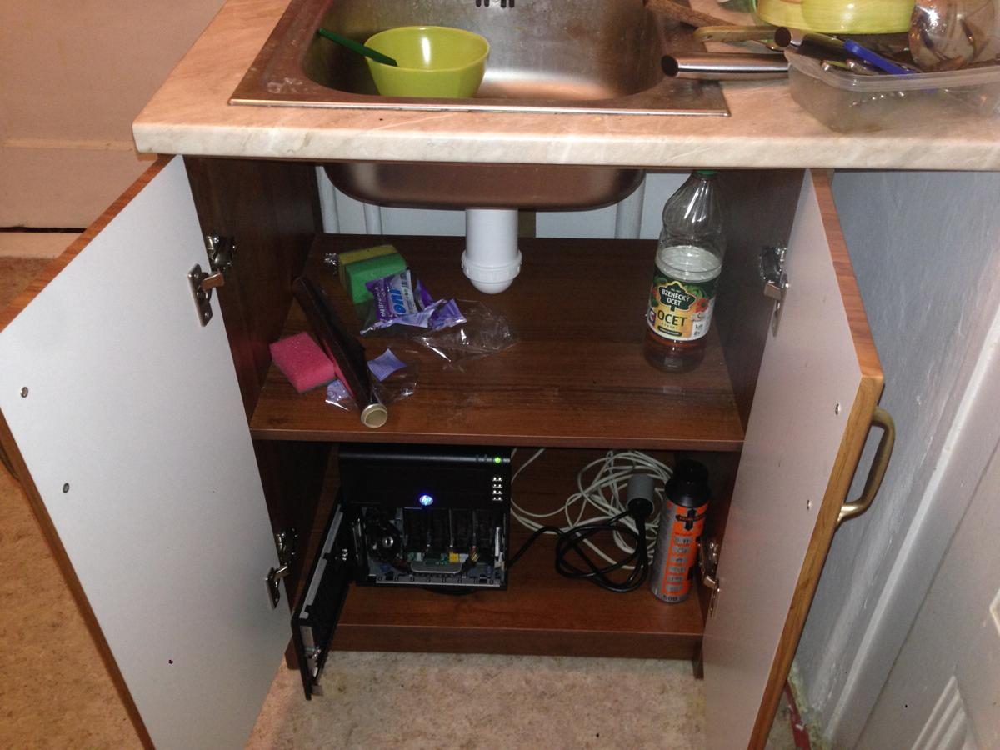

![](data:image/svg+xml,%3Csvg%20xmlns%3D%22http%3A//www.w3.org/2000/svg%22%20viewBox%3D%220%20-0.2%2011%2012.4%22%3E%0A%20%20%3Cdefs%3E%0A%20%20%20%20%3CclipPath%20id%3D%22cloth-tag%22%3E%3Cpolygon%20points%3D%220%2C0.19%200.5%2C0.79%201%2C0.09%201.5%2C0.37%202%2C0.12%202.5%2C0.71%203%2C0.30%203.5%2C0.42%204%2C0.22%204.5%2C0.24%205%2C0.73%205.5%2C0.78%206%2C0.50%206.5%2C0.34%207%2C0.61%207.5%2C0.75%208%2C0.08%208.5%2C0.38%209%2C0.26%209.5%2C0.22%2010%2C0.00%2010.5%2C0.30%2011%2C0.50%2011%2C11.72%2010.5%2C11.58%2010%2C11.73%209.5%2C11.35%209%2C11.64%208.5%2C11.33%208%2C11.53%207.5%2C11.56%207%2C11.91%206.5%2C11.47%206%2C11.28%205.5%2C11.73%205%2C11.68%204.5%2C11.81%204%2C11.90%203.5%2C11.75%203%2C11.86%202.5%2C11.25%202%2C11.24%201.5%2C11.80%201%2C11.31%200.5%2C11.20%200%2C11.32%22/%3E%3C/clipPath%3E%0A%20%20%20%20%3ClinearGradient%20id%3D%22dye-tag%22%20x1%3D%220%22%20y1%3D%220%22%20x2%3D%220.3%22%20y2%3D%221%22%3E%0A%20%20%20%20%20%20%3Cstop%20offset%3D%220%22%20stop-color%3D%22%23a64a26%22/%3E%0A%20%20%20%20%20%20%3Cstop%20offset%3D%221%22%20stop-color%3D%22%238d391b%22/%3E%0A%20%20%20%20%3C/linearGradient%3E%0A%20%20%3C/defs%3E%0A%20%20%3Cg%20clip-path%3D%22url%28%23cloth-tag%29%22%3E%0A%20%20%20%20%3Crect%20width%3D%2211%22%20height%3D%2212%22%20fill%3D%22url%28%23dye-tag%29%22/%3E%0A%20%20%20%20%3Cg%20fill%3D%22%23fffaf2%22%3E%3Crect%20x%3D%220.45%22%20y%3D%220%22%20width%3D%220.35%22%20height%3D%2212%22/%3E%3Crect%20x%3D%221.1%22%20y%3D%220%22%20width%3D%220.2%22%20height%3D%2212%22/%3E%3Crect%20x%3D%2210.2%22%20y%3D%220%22%20width%3D%220.35%22%20height%3D%2212%22/%3E%3Crect%20x%3D%229.7%22%20y%3D%220%22%20width%3D%220.2%22%20height%3D%2212%22/%3E%3C/g%3E%0A%20%20%20%20%3Cg%20fill%3D%22%23fff1e0%22%20shape-rendering%3D%22crispEdges%22%3E%3Crect%20x%3D%223%22%20y%3D%222.5%22%20width%3D%221%22%20height%3D%221%22/%3E%3Crect%20x%3D%222%22%20y%3D%224.5%22%20width%3D%221%22%20height%3D%221%22/%3E%3Crect%20x%3D%223%22%20y%3D%224.5%22%20width%3D%221%22%20height%3D%221%22/%3E%3Crect%20x%3D%224%22%20y%3D%224.5%22%20width%3D%221%22%20height%3D%221%22/%3E%3Crect%20x%3D%226%22%20y%3D%222.5%22%20width%3D%221%22%20height%3D%221%22/%3E%3Crect%20x%3D%227%22%20y%3D%222.5%22%20width%3D%221%22%20height%3D%221%22/%3E%3Crect%20x%3D%228%22%20y%3D%222.5%22%20width%3D%221%22%20height%3D%221%22/%3E%3Crect%20x%3D%226%22%20y%3D%223.5%22%20width%3D%221%22%20height%3D%221%22/%3E%3Crect%20x%3D%226%22%20y%3D%224.5%22%20width%3D%221%22%20height%3D%221%22/%3E%3Crect%20x%3D%227%22%20y%3D%224.5%22%20width%3D%221%22%20height%3D%221%22/%3E%3Crect%20x%3D%228%22%20y%3D%224.5%22%20width%3D%221%22%20height%3D%221%22/%3E%3Crect%20x%3D%222%22%20y%3D%226.5%22%20width%3D%221%22%20height%3D%221%22/%3E%3Crect%20x%3D%223%22%20y%3D%226.5%22%20width%3D%221%22%20height%3D%221%22/%3E%3Crect%20x%3D%224%22%20y%3D%226.5%22%20width%3D%221%22%20height%3D%221%22/%3E%3Crect%20x%3D%223%22%20y%3D%228.5%22%20width%3D%221%22%20height%3D%221%22/%3E%3Crect%20x%3D%226%22%20y%3D%226.5%22%20width%3D%221%22%20height%3D%221%22/%3E%3Crect%20x%3D%227%22%20y%3D%226.5%22%20width%3D%221%22%20height%3D%221%22/%3E%3Crect%20x%3D%228%22%20y%3D%226.5%22%20width%3D%221%22%20height%3D%221%22/%3E%3Crect%20x%3D%226%22%20y%3D%227.5%22%20width%3D%221%22%20height%3D%221%22/%3E%3Crect%20x%3D%226%22%20y%3D%228.5%22%20width%3D%221%22%20height%3D%221%22/%3E%3Crect%20x%3D%227%22%20y%3D%228.5%22%20width%3D%221%22%20height%3D%221%22/%3E%3Crect%20x%3D%228%22%20y%3D%228.5%22%20width%3D%221%22%20height%3D%221%22/%3E%3C/g%3E%0A%20%20%3C/g%3E%0A%3C/svg%3E) Neomezená bitva napříč dimenzemi
Neomezená bitva napříč dimenzemi![](data:image/svg+xml,%3Csvg%20xmlns%3D%22http%3A//www.w3.org/2000/svg%22%20viewBox%3D%220%20-0.2%2011%2012.4%22%3E%0A%20%20%3Cdefs%3E%0A%20%20%20%20%3CclipPath%20id%3D%22cloth-tag%22%3E%3Cpolygon%20points%3D%220%2C0.02%200.5%2C0.33%201%2C0.65%201.5%2C0.26%202%2C0.49%202.5%2C0.60%203%2C0.62%203.5%2C0.04%204%2C0.75%204.5%2C0.43%205%2C0.37%205.5%2C0.66%206%2C0.73%206.5%2C0.57%207%2C0.11%207.5%2C0.12%208%2C0.16%208.5%2C0.13%209%2C0.54%209.5%2C0.23%2010%2C0.76%2010.5%2C0.11%2011%2C0.00%2011%2C11.99%2010.5%2C11.87%2010%2C11.43%209.5%2C11.67%209%2C11.28%208.5%2C11.97%208%2C11.66%207.5%2C11.70%207%2C11.88%206.5%2C11.86%206%2C11.79%205.5%2C11.23%205%2C11.85%204.5%2C11.35%204%2C11.79%203.5%2C11.43%203%2C11.68%202.5%2C11.46%202%2C11.65%201.5%2C11.57%201%2C11.68%200.5%2C11.47%200%2C11.47%22/%3E%3C/clipPath%3E%0A%20%20%20%20%3ClinearGradient%20id%3D%22dye-tag%22%20x1%3D%220%22%20y1%3D%220%22%20x2%3D%220.3%22%20y2%3D%221%22%3E%0A%20%20%20%20%20%20%3Cstop%20offset%3D%220%22%20stop-color%3D%22%23a64a26%22/%3E%0A%20%20%20%20%20%20%3Cstop%20offset%3D%221%22%20stop-color%3D%22%238d391b%22/%3E%0A%20%20%20%20%3C/linearGradient%3E%0A%20%20%3C/defs%3E%0A%20%20%3Cg%20clip-path%3D%22url%28%23cloth-tag%29%22%3E%0A%20%20%20%20%3Crect%20width%3D%2211%22%20height%3D%2212%22%20fill%3D%22url%28%23dye-tag%29%22/%3E%0A%20%20%20%20%3Cg%20fill%3D%22%23fffaf2%22%3E%3Crect%20x%3D%220.45%22%20y%3D%220%22%20width%3D%220.35%22%20height%3D%2212%22/%3E%3Crect%20x%3D%221.1%22%20y%3D%220%22%20width%3D%220.2%22%20height%3D%2212%22/%3E%3Crect%20x%3D%2210.2%22%20y%3D%220%22%20width%3D%220.35%22%20height%3D%2212%22/%3E%3Crect%20x%3D%229.7%22%20y%3D%220%22%20width%3D%220.2%22%20height%3D%2212%22/%3E%3C/g%3E%0A%20%20%20%20%3Cg%20fill%3D%22%23fff1e0%22%20shape-rendering%3D%22crispEdges%22%3E%3Crect%20x%3D%222%22%20y%3D%222.5%22%20width%3D%221%22%20height%3D%221%22/%3E%3Crect%20x%3D%222%22%20y%3D%223.5%22%20width%3D%221%22%20height%3D%221%22/%3E%3Crect%20x%3D%223%22%20y%3D%223.5%22%20width%3D%221%22%20height%3D%221%22/%3E%3Crect%20x%3D%224%22%20y%3D%223.5%22%20width%3D%221%22%20height%3D%221%22/%3E%3Crect%20x%3D%224%22%20y%3D%224.5%22%20width%3D%221%22%20height%3D%221%22/%3E%3Crect%20x%3D%226%22%20y%3D%222.5%22%20width%3D%221%22%20height%3D%221%22/%3E%3Crect%20x%3D%228%22%20y%3D%222.5%22%20width%3D%221%22%20height%3D%221%22/%3E%3Crect%20x%3D%227%22%20y%3D%223.5%22%20width%3D%221%22%20height%3D%221%22/%3E%3Crect%20x%3D%228%22%20y%3D%223.5%22%20width%3D%221%22%20height%3D%221%22/%3E%3Crect%20x%3D%226%22%20y%3D%224.5%22%20width%3D%221%22%20height%3D%221%22/%3E%3Crect%20x%3D%227%22%20y%3D%224.5%22%20width%3D%221%22%20height%3D%221%22/%3E%3Crect%20x%3D%228%22%20y%3D%224.5%22%20width%3D%221%22%20height%3D%221%22/%3E%3Crect%20x%3D%224%22%20y%3D%226.5%22%20width%3D%221%22%20height%3D%221%22/%3E%3Crect%20x%3D%222%22%20y%3D%227.5%22%20width%3D%221%22%20height%3D%221%22/%3E%3Crect%20x%3D%223%22%20y%3D%227.5%22%20width%3D%221%22%20height%3D%221%22/%3E%3Crect%20x%3D%224%22%20y%3D%227.5%22%20width%3D%221%22%20height%3D%221%22/%3E%3Crect%20x%3D%222%22%20y%3D%228.5%22%20width%3D%221%22%20height%3D%221%22/%3E%3Crect%20x%3D%226%22%20y%3D%226.5%22%20width%3D%221%22%20height%3D%221%22/%3E%3Crect%20x%3D%227%22%20y%3D%226.5%22%20width%3D%221%22%20height%3D%221%22/%3E%3Crect%20x%3D%228%22%20y%3D%226.5%22%20width%3D%221%22%20height%3D%221%22/%3E%3Crect%20x%3D%227%22%20y%3D%227.5%22%20width%3D%221%22%20height%3D%221%22/%3E%3Crect%20x%3D%228%22%20y%3D%227.5%22%20width%3D%221%22%20height%3D%221%22/%3E%3Crect%20x%3D%226%22%20y%3D%228.5%22%20width%3D%221%22%20height%3D%221%22/%3E%3Crect%20x%3D%228%22%20y%3D%228.5%22%20width%3D%221%22%20height%3D%221%22/%3E%3C/g%3E%0A%20%20%3C/g%3E%0A%3C/svg%3E) Upgrade na MK4
Upgrade na MK4![](data:image/svg+xml,%3Csvg%20xmlns%3D%22http%3A//www.w3.org/2000/svg%22%20viewBox%3D%220%20-0.2%2011%2012.4%22%3E%0A%20%20%3Cdefs%3E%0A%20%20%20%20%3CclipPath%20id%3D%22cloth-tag%22%3E%3Cpolygon%20points%3D%220%2C0.33%200.5%2C0.60%201%2C0.48%201.5%2C0.52%202%2C0.35%202.5%2C0.63%203%2C0.60%203.5%2C0.25%204%2C0.67%204.5%2C0.42%205%2C0.46%205.5%2C0.38%206%2C0.40%206.5%2C0.14%207%2C0.33%207.5%2C0.54%208%2C0.20%208.5%2C0.31%209%2C0.44%209.5%2C0.54%2010%2C0.09%2010.5%2C0.26%2011%2C0.36%2011%2C11.75%2010.5%2C11.22%2010%2C11.76%209.5%2C11.36%209%2C11.95%208.5%2C12.00%208%2C11.57%207.5%2C11.71%207%2C11.38%206.5%2C11.84%206%2C11.38%205.5%2C11.54%205%2C11.30%204.5%2C11.84%204%2C11.64%203.5%2C11.94%203%2C11.87%202.5%2C11.72%202%2C11.27%201.5%2C11.78%201%2C11.64%200.5%2C11.50%200%2C11.91%22/%3E%3C/clipPath%3E%0A%20%20%20%20%3ClinearGradient%20id%3D%22dye-tag%22%20x1%3D%220%22%20y1%3D%220%22%20x2%3D%220.3%22%20y2%3D%221%22%3E%0A%20%20%20%20%20%20%3Cstop%20offset%3D%220%22%20stop-color%3D%22%23a64a26%22/%3E%0A%20%20%20%20%20%20%3Cstop%20offset%3D%221%22%20stop-color%3D%22%238d391b%22/%3E%0A%20%20%20%20%3C/linearGradient%3E%0A%20%20%3C/defs%3E%0A%20%20%3Cg%20clip-path%3D%22url%28%23cloth-tag%29%22%3E%0A%20%20%20%20%3Crect%20width%3D%2211%22%20height%3D%2212%22%20fill%3D%22url%28%23dye-tag%29%22/%3E%0A%20%20%20%20%3Cg%20fill%3D%22%23fffaf2%22%3E%3Crect%20x%3D%220.45%22%20y%3D%220%22%20width%3D%220.35%22%20height%3D%2212%22/%3E%3Crect%20x%3D%221.1%22%20y%3D%220%22%20width%3D%220.2%22%20height%3D%2212%22/%3E%3Crect%20x%3D%2210.2%22%20y%3D%220%22%20width%3D%220.35%22%20height%3D%2212%22/%3E%3Crect%20x%3D%229.7%22%20y%3D%220%22%20width%3D%220.2%22%20height%3D%2212%22/%3E%3C/g%3E%0A%20%20%20%20%3Cg%20fill%3D%22%23fff1e0%22%20shape-rendering%3D%22crispEdges%22%3E%3Crect%20x%3D%222%22%20y%3D%222.5%22%20width%3D%221%22%20height%3D%221%22/%3E%3Crect%20x%3D%223%22%20y%3D%222.5%22%20width%3D%221%22%20height%3D%221%22/%3E%3Crect%20x%3D%224%22%20y%3D%222.5%22%20width%3D%221%22%20height%3D%221%22/%3E%3Crect%20x%3D%224%22%20y%3D%223.5%22%20width%3D%221%22%20height%3D%221%22/%3E%3Crect%20x%3D%222%22%20y%3D%224.5%22%20width%3D%221%22%20height%3D%221%22/%3E%3Crect%20x%3D%223%22%20y%3D%224.5%22%20width%3D%221%22%20height%3D%221%22/%3E%3Crect%20x%3D%224%22%20y%3D%224.5%22%20width%3D%221%22%20height%3D%221%22/%3E%3Crect%20x%3D%226%22%20y%3D%222.5%22%20width%3D%221%22%20height%3D%221%22/%3E%3Crect%20x%3D%228%22%20y%3D%223.5%22%20width%3D%221%22%20height%3D%221%22/%3E%3Crect%20x%3D%227%22%20y%3D%224.5%22%20width%3D%221%22%20height%3D%221%22/%3E%3Crect%20x%3D%228%22%20y%3D%224.5%22%20width%3D%221%22%20height%3D%221%22/%3E%3Crect%20x%3D%222%22%20y%3D%226.5%22%20width%3D%221%22%20height%3D%221%22/%3E%3Crect%20x%3D%223%22%20y%3D%226.5%22%20width%3D%221%22%20height%3D%221%22/%3E%3Crect%20x%3D%224%22%20y%3D%226.5%22%20width%3D%221%22%20height%3D%221%22/%3E%3Crect%20x%3D%224%22%20y%3D%227.5%22%20width%3D%221%22%20height%3D%221%22/%3E%3Crect%20x%3D%222%22%20y%3D%228.5%22%20width%3D%221%22%20height%3D%221%22/%3E%3Crect%20x%3D%223%22%20y%3D%228.5%22%20width%3D%221%22%20height%3D%221%22/%3E%3Crect%20x%3D%224%22%20y%3D%228.5%22%20width%3D%221%22%20height%3D%221%22/%3E%3Crect%20x%3D%227%22%20y%3D%226.5%22%20width%3D%221%22%20height%3D%221%22/%3E%3Crect%20x%3D%228%22%20y%3D%226.5%22%20width%3D%221%22%20height%3D%221%22/%3E%3Crect%20x%3D%228%22%20y%3D%227.5%22%20width%3D%221%22%20height%3D%221%22/%3E%3Crect%20x%3D%226%22%20y%3D%228.5%22%20width%3D%221%22%20height%3D%221%22/%3E%3C/g%3E%0A%20%20%3C/g%3E%0A%3C/svg%3E) HobbyCell
HobbyCell![](data:image/svg+xml,%3Csvg%20xmlns%3D%22http%3A//www.w3.org/2000/svg%22%20viewBox%3D%220%20-0.2%2011%2012.4%22%3E%0A%20%20%3Cdefs%3E%0A%20%20%20%20%3CclipPath%20id%3D%22cloth-tag%22%3E%3Cpolygon%20points%3D%220%2C0.13%200.5%2C0.62%201%2C0.31%201.5%2C0.32%202%2C0.75%202.5%2C0.65%203%2C0.62%203.5%2C0.28%204%2C0.59%204.5%2C0.22%205%2C0.36%205.5%2C0.34%206%2C0.33%206.5%2C0.80%207%2C0.71%207.5%2C0.18%208%2C0.59%208.5%2C0.50%209%2C0.20%209.5%2C0.34%2010%2C0.06%2010.5%2C0.22%2011%2C0.38%2011%2C11.93%2010.5%2C11.70%2010%2C11.40%209.5%2C11.79%209%2C11.49%208.5%2C11.98%208%2C11.91%207.5%2C11.47%207%2C11.95%206.5%2C11.52%206%2C11.72%205.5%2C11.26%205%2C11.83%204.5%2C11.85%204%2C11.74%203.5%2C11.97%203%2C11.83%202.5%2C11.40%202%2C11.79%201.5%2C11.61%201%2C11.98%200.5%2C11.88%200%2C11.98%22/%3E%3C/clipPath%3E%0A%20%20%20%20%3ClinearGradient%20id%3D%22dye-tag%22%20x1%3D%220%22%20y1%3D%220%22%20x2%3D%220.3%22%20y2%3D%221%22%3E%0A%20%20%20%20%20%20%3Cstop%20offset%3D%220%22%20stop-color%3D%22%23a64a26%22/%3E%0A%20%20%20%20%20%20%3Cstop%20offset%3D%221%22%20stop-color%3D%22%238d391b%22/%3E%0A%20%20%20%20%3C/linearGradient%3E%0A%20%20%3C/defs%3E%0A%20%20%3Cg%20clip-path%3D%22url%28%23cloth-tag%29%22%3E%0A%20%20%20%20%3Crect%20width%3D%2211%22%20height%3D%2212%22%20fill%3D%22url%28%23dye-tag%29%22/%3E%0A%20%20%20%20%3Cg%20fill%3D%22%23fffaf2%22%3E%3Crect%20x%3D%220.45%22%20y%3D%220%22%20width%3D%220.35%22%20height%3D%2212%22/%3E%3Crect%20x%3D%221.1%22%20y%3D%220%22%20width%3D%220.2%22%20height%3D%2212%22/%3E%3Crect%20x%3D%2210.2%22%20y%3D%220%22%20width%3D%220.35%22%20height%3D%2212%22/%3E%3Crect%20x%3D%229.7%22%20y%3D%220%22%20width%3D%220.2%22%20height%3D%2212%22/%3E%3C/g%3E%0A%20%20%20%20%3Cg%20fill%3D%22%23fff1e0%22%20shape-rendering%3D%22crispEdges%22%3E%3Crect%20x%3D%222%22%20y%3D%222.5%22%20width%3D%221%22%20height%3D%221%22/%3E%3Crect%20x%3D%223%22%20y%3D%222.5%22%20width%3D%221%22%20height%3D%221%22/%3E%3Crect%20x%3D%224%22%20y%3D%222.5%22%20width%3D%221%22%20height%3D%221%22/%3E%3Crect%20x%3D%224%22%20y%3D%224.5%22%20width%3D%221%22%20height%3D%221%22/%3E%3Crect%20x%3D%226%22%20y%3D%222.5%22%20width%3D%221%22%20height%3D%221%22/%3E%3Crect%20x%3D%227%22%20y%3D%222.5%22%20width%3D%221%22%20height%3D%221%22/%3E%3Crect%20x%3D%228%22%20y%3D%222.5%22%20width%3D%221%22%20height%3D%221%22/%3E%3Crect%20x%3D%226%22%20y%3D%224.5%22%20width%3D%221%22%20height%3D%221%22/%3E%3Crect%20x%3D%223%22%20y%3D%226.5%22%20width%3D%221%22%20height%3D%221%22/%3E%3Crect%20x%3D%222%22%20y%3D%228.5%22%20width%3D%221%22%20height%3D%221%22/%3E%3Crect%20x%3D%223%22%20y%3D%228.5%22%20width%3D%221%22%20height%3D%221%22/%3E%3Crect%20x%3D%224%22%20y%3D%228.5%22%20width%3D%221%22%20height%3D%221%22/%3E%3Crect%20x%3D%227%22%20y%3D%226.5%22%20width%3D%221%22%20height%3D%221%22/%3E%3Crect%20x%3D%226%22%20y%3D%228.5%22%20width%3D%221%22%20height%3D%221%22/%3E%3Crect%20x%3D%227%22%20y%3D%228.5%22%20width%3D%221%22%20height%3D%221%22/%3E%3Crect%20x%3D%228%22%20y%3D%228.5%22%20width%3D%221%22%20height%3D%221%22/%3E%3C/g%3E%0A%20%20%3C/g%3E%0A%3C/svg%3E) CaptchaCoin
CaptchaCoin![](data:image/svg+xml,%3Csvg%20xmlns%3D%22http%3A//www.w3.org/2000/svg%22%20viewBox%3D%220%20-0.2%2011%2012.4%22%3E%0A%20%20%3Cdefs%3E%0A%20%20%20%20%3CclipPath%20id%3D%22cloth-tag%22%3E%3Cpolygon%20points%3D%220%2C0.58%200.5%2C0.27%201%2C0.29%201.5%2C0.32%202%2C0.60%202.5%2C0.32%203%2C0.27%203.5%2C0.41%204%2C0.16%204.5%2C0.51%205%2C0.29%205.5%2C0.18%206%2C0.44%206.5%2C0.23%207%2C0.60%207.5%2C0.30%208%2C0.69%208.5%2C0.71%209%2C0.42%209.5%2C0.53%2010%2C0.52%2010.5%2C0.56%2011%2C0.49%2011%2C11.34%2010.5%2C11.33%2010%2C11.60%209.5%2C11.25%209%2C11.76%208.5%2C11.47%208%2C11.55%207.5%2C11.25%207%2C11.48%206.5%2C11.21%206%2C11.98%205.5%2C11.91%205%2C11.21%204.5%2C11.86%204%2C11.48%203.5%2C11.49%203%2C11.81%202.5%2C11.32%202%2C11.66%201.5%2C11.73%201%2C11.48%200.5%2C11.22%200%2C11.33%22/%3E%3C/clipPath%3E%0A%20%20%20%20%3ClinearGradient%20id%3D%22dye-tag%22%20x1%3D%220%22%20y1%3D%220%22%20x2%3D%220.3%22%20y2%3D%221%22%3E%0A%20%20%20%20%20%20%3Cstop%20offset%3D%220%22%20stop-color%3D%22%23a64a26%22/%3E%0A%20%20%20%20%20%20%3Cstop%20offset%3D%221%22%20stop-color%3D%22%238d391b%22/%3E%0A%20%20%20%20%3C/linearGradient%3E%0A%20%20%3C/defs%3E%0A%20%20%3Cg%20clip-path%3D%22url%28%23cloth-tag%29%22%3E%0A%20%20%20%20%3Crect%20width%3D%2211%22%20height%3D%2212%22%20fill%3D%22url%28%23dye-tag%29%22/%3E%0A%20%20%20%20%3Cg%20fill%3D%22%23fffaf2%22%3E%3Crect%20x%3D%220.45%22%20y%3D%220%22%20width%3D%220.35%22%20height%3D%2212%22/%3E%3Crect%20x%3D%221.1%22%20y%3D%220%22%20width%3D%220.2%22%20height%3D%2212%22/%3E%3Crect%20x%3D%2210.2%22%20y%3D%220%22%20width%3D%220.35%22%20height%3D%2212%22/%3E%3Crect%20x%3D%229.7%22%20y%3D%220%22%20width%3D%220.2%22%20height%3D%2212%22/%3E%3C/g%3E%0A%20%20%20%20%3Cg%20fill%3D%22%23fff1e0%22%20shape-rendering%3D%22crispEdges%22%3E%3Crect%20x%3D%222%22%20y%3D%222.5%22%20width%3D%221%22%20height%3D%221%22/%3E%3Crect%20x%3D%223%22%20y%3D%222.5%22%20width%3D%221%22%20height%3D%221%22/%3E%3Crect%20x%3D%224%22%20y%3D%222.5%22%20width%3D%221%22%20height%3D%221%22/%3E%3Crect%20x%3D%222%22%20y%3D%224.5%22%20width%3D%221%22%20height%3D%221%22/%3E%3Crect%20x%3D%224%22%20y%3D%224.5%22%20width%3D%221%22%20height%3D%221%22/%3E%3Crect%20x%3D%226%22%20y%3D%222.5%22%20width%3D%221%22%20height%3D%221%22/%3E%3Crect%20x%3D%227%22%20y%3D%222.5%22%20width%3D%221%22%20height%3D%221%22/%3E%3Crect%20x%3D%227%22%20y%3D%223.5%22%20width%3D%221%22%20height%3D%221%22/%3E%3Crect%20x%3D%227%22%20y%3D%224.5%22%20width%3D%221%22%20height%3D%221%22/%3E%3Crect%20x%3D%228%22%20y%3D%224.5%22%20width%3D%221%22%20height%3D%221%22/%3E%3Crect%20x%3D%222%22%20y%3D%226.5%22%20width%3D%221%22%20height%3D%221%22/%3E%3Crect%20x%3D%224%22%20y%3D%226.5%22%20width%3D%221%22%20height%3D%221%22/%3E%3Crect%20x%3D%222%22%20y%3D%228.5%22%20width%3D%221%22%20height%3D%221%22/%3E%3Crect%20x%3D%223%22%20y%3D%228.5%22%20width%3D%221%22%20height%3D%221%22/%3E%3Crect%20x%3D%224%22%20y%3D%228.5%22%20width%3D%221%22%20height%3D%221%22/%3E%3Crect%20x%3D%227%22%20y%3D%226.5%22%20width%3D%221%22%20height%3D%221%22/%3E%3Crect%20x%3D%228%22%20y%3D%226.5%22%20width%3D%221%22%20height%3D%221%22/%3E%3Crect%20x%3D%227%22%20y%3D%227.5%22%20width%3D%221%22%20height%3D%221%22/%3E%3Crect%20x%3D%226%22%20y%3D%228.5%22%20width%3D%221%22%20height%3D%221%22/%3E%3Crect%20x%3D%227%22%20y%3D%228.5%22%20width%3D%221%22%20height%3D%221%22/%3E%3C/g%3E%0A%20%20%3C/g%3E%0A%3C/svg%3E) Jak na vlastní LLM (GPT)
Jak na vlastní LLM (GPT)![](data:image/svg+xml,%3Csvg%20xmlns%3D%22http%3A//www.w3.org/2000/svg%22%20viewBox%3D%220%20-0.2%2011%2012.4%22%3E%0A%20%20%3Cdefs%3E%0A%20%20%20%20%3CclipPath%20id%3D%22cloth-tag%22%3E%3Cpolygon%20points%3D%220%2C0.27%200.5%2C0.61%201%2C0.73%201.5%2C0.37%202%2C0.04%202.5%2C0.36%203%2C0.65%203.5%2C0.18%204%2C0.14%204.5%2C0.50%205%2C0.60%205.5%2C0.13%206%2C0.61%206.5%2C0.76%207%2C0.26%207.5%2C0.09%208%2C0.67%208.5%2C0.69%209%2C0.41%209.5%2C0.35%2010%2C0.60%2010.5%2C0.13%2011%2C0.05%2011%2C11.56%2010.5%2C11.95%2010%2C11.67%209.5%2C11.53%209%2C11.87%208.5%2C11.92%208%2C11.27%207.5%2C11.44%207%2C11.82%206.5%2C11.46%206%2C11.62%205.5%2C11.38%205%2C11.81%204.5%2C11.47%204%2C11.41%203.5%2C11.87%203%2C11.82%202.5%2C11.32%202%2C11.85%201.5%2C11.29%201%2C11.63%200.5%2C11.23%200%2C11.92%22/%3E%3C/clipPath%3E%0A%20%20%20%20%3ClinearGradient%20id%3D%22dye-tag%22%20x1%3D%220%22%20y1%3D%220%22%20x2%3D%220.3%22%20y2%3D%221%22%3E%0A%20%20%20%20%20%20%3Cstop%20offset%3D%220%22%20stop-color%3D%22%23a64a26%22/%3E%0A%20%20%20%20%20%20%3Cstop%20offset%3D%221%22%20stop-color%3D%22%238d391b%22/%3E%0A%20%20%20%20%3C/linearGradient%3E%0A%20%20%3C/defs%3E%0A%20%20%3Cg%20clip-path%3D%22url%28%23cloth-tag%29%22%3E%0A%20%20%20%20%3Crect%20width%3D%2211%22%20height%3D%2212%22%20fill%3D%22url%28%23dye-tag%29%22/%3E%0A%20%20%20%20%3Cg%20fill%3D%22%23fffaf2%22%3E%3Crect%20x%3D%220.45%22%20y%3D%220%22%20width%3D%220.35%22%20height%3D%2212%22/%3E%3Crect%20x%3D%221.1%22%20y%3D%220%22%20width%3D%220.2%22%20height%3D%2212%22/%3E%3Crect%20x%3D%2210.2%22%20y%3D%220%22%20width%3D%220.35%22%20height%3D%2212%22/%3E%3Crect%20x%3D%229.7%22%20y%3D%220%22%20width%3D%220.2%22%20height%3D%2212%22/%3E%3C/g%3E%0A%20%20%20%20%3Cg%20fill%3D%22%23fff1e0%22%20shape-rendering%3D%22crispEdges%22%3E%3Crect%20x%3D%222%22%20y%3D%222.5%22%20width%3D%221%22%20height%3D%221%22/%3E%3Crect%20x%3D%223%22%20y%3D%222.5%22%20width%3D%221%22%20height%3D%221%22/%3E%3Crect%20x%3D%224%22%20y%3D%222.5%22%20width%3D%221%22%20height%3D%221%22/%3E%3Crect%20x%3D%224%22%20y%3D%224.5%22%20width%3D%221%22%20height%3D%221%22/%3E%3Crect%20x%3D%226%22%20y%3D%222.5%22%20width%3D%221%22%20height%3D%221%22/%3E%3Crect%20x%3D%227%22%20y%3D%222.5%22%20width%3D%221%22%20height%3D%221%22/%3E%3Crect%20x%3D%228%22%20y%3D%222.5%22%20width%3D%221%22%20height%3D%221%22/%3E%3Crect%20x%3D%226%22%20y%3D%224.5%22%20width%3D%221%22%20height%3D%221%22/%3E%3Crect%20x%3D%222%22%20y%3D%226.5%22%20width%3D%221%22%20height%3D%221%22/%3E%3Crect%20x%3D%222%22%20y%3D%227.5%22%20width%3D%221%22%20height%3D%221%22/%3E%3Crect%20x%3D%224%22%20y%3D%227.5%22%20width%3D%221%22%20height%3D%221%22/%3E%3Crect%20x%3D%222%22%20y%3D%228.5%22%20width%3D%221%22%20height%3D%221%22/%3E%3Crect%20x%3D%223%22%20y%3D%228.5%22%20width%3D%221%22%20height%3D%221%22/%3E%3Crect%20x%3D%224%22%20y%3D%228.5%22%20width%3D%221%22%20height%3D%221%22/%3E%3Crect%20x%3D%228%22%20y%3D%226.5%22%20width%3D%221%22%20height%3D%221%22/%3E%3Crect%20x%3D%226%22%20y%3D%227.5%22%20width%3D%221%22%20height%3D%221%22/%3E%3Crect%20x%3D%228%22%20y%3D%227.5%22%20width%3D%221%22%20height%3D%221%22/%3E%3Crect%20x%3D%226%22%20y%3D%228.5%22%20width%3D%221%22%20height%3D%221%22/%3E%3Crect%20x%3D%227%22%20y%3D%228.5%22%20width%3D%221%22%20height%3D%221%22/%3E%3Crect%20x%3D%228%22%20y%3D%228.5%22%20width%3D%221%22%20height%3D%221%22/%3E%3C/g%3E%0A%20%20%3C/g%3E%0A%3C/svg%3E) Software
Software![](data:image/svg+xml,%3Csvg%20xmlns%3D%22http%3A//www.w3.org/2000/svg%22%20viewBox%3D%220%20-0.2%2011%2012.4%22%3E%0A%20%20%3Cdefs%3E%0A%20%20%20%20%3CclipPath%20id%3D%22cloth-tag%22%3E%3Cpolygon%20points%3D%220%2C0.42%200.5%2C0.66%201%2C0.49%201.5%2C0.03%202%2C0.62%202.5%2C0.43%203%2C0.22%203.5%2C0.05%204%2C0.12%204.5%2C0.37%205%2C0.68%205.5%2C0.07%206%2C0.19%206.5%2C0.66%207%2C0.01%207.5%2C0.16%208%2C0.53%208.5%2C0.15%209%2C0.08%209.5%2C0.50%2010%2C0.05%2010.5%2C0.13%2011%2C0.20%2011%2C11.87%2010.5%2C11.84%2010%2C11.23%209.5%2C11.91%209%2C11.77%208.5%2C11.27%208%2C11.74%207.5%2C11.57%207%2C11.83%206.5%2C11.77%206%2C11.48%205.5%2C11.88%205%2C11.42%204.5%2C11.64%204%2C11.81%203.5%2C11.60%203%2C11.77%202.5%2C11.47%202%2C11.30%201.5%2C11.69%201%2C11.33%200.5%2C11.52%200%2C12.00%22/%3E%3C/clipPath%3E%0A%20%20%20%20%3ClinearGradient%20id%3D%22dye-tag%22%20x1%3D%220%22%20y1%3D%220%22%20x2%3D%220.3%22%20y2%3D%221%22%3E%0A%20%20%20%20%20%20%3Cstop%20offset%3D%220%22%20stop-color%3D%22%23a64a26%22/%3E%0A%20%20%20%20%20%20%3Cstop%20offset%3D%221%22%20stop-color%3D%22%238d391b%22/%3E%0A%20%20%20%20%3C/linearGradient%3E%0A%20%20%3C/defs%3E%0A%20%20%3Cg%20clip-path%3D%22url%28%23cloth-tag%29%22%3E%0A%20%20%20%20%3Crect%20width%3D%2211%22%20height%3D%2212%22%20fill%3D%22url%28%23dye-tag%29%22/%3E%0A%20%20%20%20%3Cg%20fill%3D%22%23fffaf2%22%3E%3Crect%20x%3D%220.45%22%20y%3D%220%22%20width%3D%220.35%22%20height%3D%2212%22/%3E%3Crect%20x%3D%221.1%22%20y%3D%220%22%20width%3D%220.2%22%20height%3D%2212%22/%3E%3Crect%20x%3D%2210.2%22%20y%3D%220%22%20width%3D%220.35%22%20height%3D%2212%22/%3E%3Crect%20x%3D%229.7%22%20y%3D%220%22%20width%3D%220.2%22%20height%3D%2212%22/%3E%3C/g%3E%0A%20%20%20%20%3Cg%20fill%3D%22%23fff1e0%22%20shape-rendering%3D%22crispEdges%22%3E%3Crect%20x%3D%222%22%20y%3D%222.5%22%20width%3D%221%22%20height%3D%221%22/%3E%3Crect%20x%3D%222%22%20y%3D%223.5%22%20width%3D%221%22%20height%3D%221%22/%3E%3Crect%20x%3D%223%22%20y%3D%223.5%22%20width%3D%221%22%20height%3D%221%22/%3E%3Crect%20x%3D%224%22%20y%3D%223.5%22%20width%3D%221%22%20height%3D%221%22/%3E%3Crect%20x%3D%224%22%20y%3D%224.5%22%20width%3D%221%22%20height%3D%221%22/%3E%3Crect%20x%3D%226%22%20y%3D%222.5%22%20width%3D%221%22%20height%3D%221%22/%3E%3Crect%20x%3D%227%22%20y%3D%222.5%22%20width%3D%221%22%20height%3D%221%22/%3E%3Crect%20x%3D%228%22%20y%3D%222.5%22%20width%3D%221%22%20height%3D%221%22/%3E%3Crect%20x%3D%226%22%20y%3D%223.5%22%20width%3D%221%22%20height%3D%221%22/%3E%3Crect%20x%3D%228%22%20y%3D%223.5%22%20width%3D%221%22%20height%3D%221%22/%3E%3Crect%20x%3D%228%22%20y%3D%224.5%22%20width%3D%221%22%20height%3D%221%22/%3E%3Crect%20x%3D%224%22%20y%3D%226.5%22%20width%3D%221%22%20height%3D%221%22/%3E%3Crect%20x%3D%222%22%20y%3D%227.5%22%20width%3D%221%22%20height%3D%221%22/%3E%3Crect%20x%3D%223%22%20y%3D%227.5%22%20width%3D%221%22%20height%3D%221%22/%3E%3Crect%20x%3D%224%22%20y%3D%227.5%22%20width%3D%221%22%20height%3D%221%22/%3E%3Crect%20x%3D%222%22%20y%3D%228.5%22%20width%3D%221%22%20height%3D%221%22/%3E%3Crect%20x%3D%228%22%20y%3D%226.5%22%20width%3D%221%22%20height%3D%221%22/%3E%3Crect%20x%3D%226%22%20y%3D%227.5%22%20width%3D%221%22%20height%3D%221%22/%3E%3Crect%20x%3D%228%22%20y%3D%227.5%22%20width%3D%221%22%20height%3D%221%22/%3E%3Crect%20x%3D%226%22%20y%3D%228.5%22%20width%3D%221%22%20height%3D%221%22/%3E%3Crect%20x%3D%227%22%20y%3D%228.5%22%20width%3D%221%22%20height%3D%221%22/%3E%3Crect%20x%3D%228%22%20y%3D%228.5%22%20width%3D%221%22%20height%3D%221%22/%3E%3C/g%3E%0A%20%20%3C/g%3E%0A%3C/svg%3E) Paromobilita je budoucnost
Paromobilita je budoucnost![](data:image/svg+xml,%3Csvg%20xmlns%3D%22http%3A//www.w3.org/2000/svg%22%20viewBox%3D%220%20-0.2%2011%2012.4%22%3E%0A%20%20%3Cdefs%3E%0A%20%20%20%20%3CclipPath%20id%3D%22cloth-tag%22%3E%3Cpolygon%20points%3D%220%2C0.71%200.5%2C0.56%201%2C0.30%201.5%2C0.79%202%2C0.46%202.5%2C0.31%203%2C0.28%203.5%2C0.77%204%2C0.50%204.5%2C0.60%205%2C0.45%205.5%2C0.60%206%2C0.80%206.5%2C0.47%207%2C0.59%207.5%2C0.31%208%2C0.45%208.5%2C0.36%209%2C0.75%209.5%2C0.26%2010%2C0.66%2010.5%2C0.52%2011%2C0.55%2011%2C11.33%2010.5%2C11.76%2010%2C11.39%209.5%2C11.83%209%2C12.00%208.5%2C11.47%208%2C11.64%207.5%2C11.28%207%2C11.22%206.5%2C11.26%206%2C11.90%205.5%2C11.31%205%2C11.23%204.5%2C11.99%204%2C11.53%203.5%2C11.27%203%2C11.86%202.5%2C11.79%202%2C11.80%201.5%2C11.92%201%2C11.40%200.5%2C11.34%200%2C11.55%22/%3E%3C/clipPath%3E%0A%20%20%20%20%3ClinearGradient%20id%3D%22dye-tag%22%20x1%3D%220%22%20y1%3D%220%22%20x2%3D%220.3%22%20y2%3D%221%22%3E%0A%20%20%20%20%20%20%3Cstop%20offset%3D%220%22%20stop-color%3D%22%23a64a26%22/%3E%0A%20%20%20%20%20%20%3Cstop%20offset%3D%221%22%20stop-color%3D%22%238d391b%22/%3E%0A%20%20%20%20%3C/linearGradient%3E%0A%20%20%3C/defs%3E%0A%20%20%3Cg%20clip-path%3D%22url%28%23cloth-tag%29%22%3E%0A%20%20%20%20%3Crect%20width%3D%2211%22%20height%3D%2212%22%20fill%3D%22url%28%23dye-tag%29%22/%3E%0A%20%20%20%20%3Cg%20fill%3D%22%23fffaf2%22%3E%3Crect%20x%3D%220.45%22%20y%3D%220%22%20width%3D%220.35%22%20height%3D%2212%22/%3E%3Crect%20x%3D%221.1%22%20y%3D%220%22%20width%3D%220.2%22%20height%3D%2212%22/%3E%3Crect%20x%3D%2210.2%22%20y%3D%220%22%20width%3D%220.35%22%20height%3D%2212%22/%3E%3Crect%20x%3D%229.7%22%20y%3D%220%22%20width%3D%220.2%22%20height%3D%2212%22/%3E%3C/g%3E%0A%20%20%20%20%3Cg%20fill%3D%22%23fff1e0%22%20shape-rendering%3D%22crispEdges%22%3E%3Crect%20x%3D%224%22%20y%3D%222.5%22%20width%3D%221%22%20height%3D%221%22/%3E%3Crect%20x%3D%222%22%20y%3D%223.5%22%20width%3D%221%22%20height%3D%221%22/%3E%3Crect%20x%3D%224%22%20y%3D%223.5%22%20width%3D%221%22%20height%3D%221%22/%3E%3Crect%20x%3D%222%22%20y%3D%224.5%22%20width%3D%221%22%20height%3D%221%22/%3E%3Crect%20x%3D%223%22%20y%3D%224.5%22%20width%3D%221%22%20height%3D%221%22/%3E%3Crect%20x%3D%224%22%20y%3D%224.5%22%20width%3D%221%22%20height%3D%221%22/%3E%3Crect%20x%3D%226%22%20y%3D%222.5%22%20width%3D%221%22%20height%3D%221%22/%3E%3Crect%20x%3D%226%22%20y%3D%223.5%22%20width%3D%221%22%20height%3D%221%22/%3E%3Crect%20x%3D%228%22%20y%3D%223.5%22%20width%3D%221%22%20height%3D%221%22/%3E%3Crect%20x%3D%226%22%20y%3D%224.5%22%20width%3D%221%22%20height%3D%221%22/%3E%3Crect%20x%3D%227%22%20y%3D%224.5%22%20width%3D%221%22%20height%3D%221%22/%3E%3Crect%20x%3D%228%22%20y%3D%224.5%22%20width%3D%221%22%20height%3D%221%22/%3E%3Crect%20x%3D%222%22%20y%3D%226.5%22%20width%3D%221%22%20height%3D%221%22/%3E%3Crect%20x%3D%223%22%20y%3D%226.5%22%20width%3D%221%22%20height%3D%221%22/%3E%3Crect%20x%3D%224%22%20y%3D%226.5%22%20width%3D%221%22%20height%3D%221%22/%3E%3Crect%20x%3D%223%22%20y%3D%227.5%22%20width%3D%221%22%20height%3D%221%22/%3E%3Crect%20x%3D%224%22%20y%3D%227.5%22%20width%3D%221%22%20height%3D%221%22/%3E%3Crect%20x%3D%224%22%20y%3D%228.5%22%20width%3D%221%22%20height%3D%221%22/%3E%3Crect%20x%3D%226%22%20y%3D%226.5%22%20width%3D%221%22%20height%3D%221%22/%3E%3Crect%20x%3D%227%22%20y%3D%226.5%22%20width%3D%221%22%20height%3D%221%22/%3E%3Crect%20x%3D%228%22%20y%3D%226.5%22%20width%3D%221%22%20height%3D%221%22/%3E%3Crect%20x%3D%226%22%20y%3D%227.5%22%20width%3D%221%22%20height%3D%221%22/%3E%3Crect%20x%3D%227%22%20y%3D%227.5%22%20width%3D%221%22%20height%3D%221%22/%3E%3Crect%20x%3D%226%22%20y%3D%228.5%22%20width%3D%221%22%20height%3D%221%22/%3E%3C/g%3E%0A%20%20%3C/g%3E%0A%3C/svg%3E) Algoritmus hledání programátorské práce 2021/4
Algoritmus hledání programátorské práce 2021/4![](data:image/svg+xml,%3Csvg%20xmlns%3D%22http%3A//www.w3.org/2000/svg%22%20viewBox%3D%220%20-0.2%2011%2012.4%22%3E%0A%20%20%3Cdefs%3E%0A%20%20%20%20%3CclipPath%20id%3D%22cloth-tag%22%3E%3Cpolygon%20points%3D%220%2C0.58%200.5%2C0.71%201%2C0.15%201.5%2C0.72%202%2C0.23%202.5%2C0.56%203%2C0.57%203.5%2C0.72%204%2C0.39%204.5%2C0.45%205%2C0.73%205.5%2C0.29%206%2C0.45%206.5%2C0.61%207%2C0.66%207.5%2C0.67%208%2C0.72%208.5%2C0.68%209%2C0.58%209.5%2C0.17%2010%2C0.41%2010.5%2C0.37%2011%2C0.54%2011%2C11.66%2010.5%2C11.66%2010%2C11.68%209.5%2C11.64%209%2C11.28%208.5%2C11.96%208%2C11.21%207.5%2C11.61%207%2C11.32%206.5%2C11.62%206%2C11.98%205.5%2C11.64%205%2C11.31%204.5%2C11.50%204%2C11.98%203.5%2C11.78%203%2C11.84%202.5%2C11.88%202%2C11.21%201.5%2C11.22%201%2C11.90%200.5%2C11.91%200%2C11.33%22/%3E%3C/clipPath%3E%0A%20%20%20%20%3ClinearGradient%20id%3D%22dye-tag%22%20x1%3D%220%22%20y1%3D%220%22%20x2%3D%220.3%22%20y2%3D%221%22%3E%0A%20%20%20%20%20%20%3Cstop%20offset%3D%220%22%20stop-color%3D%22%23a64a26%22/%3E%0A%20%20%20%20%20%20%3Cstop%20offset%3D%221%22%20stop-color%3D%22%238d391b%22/%3E%0A%20%20%20%20%3C/linearGradient%3E%0A%20%20%3C/defs%3E%0A%20%20%3Cg%20clip-path%3D%22url%28%23cloth-tag%29%22%3E%0A%20%20%20%20%3Crect%20width%3D%2211%22%20height%3D%2212%22%20fill%3D%22url%28%23dye-tag%29%22/%3E%0A%20%20%20%20%3Cg%20fill%3D%22%23fffaf2%22%3E%3Crect%20x%3D%220.45%22%20y%3D%220%22%20width%3D%220.35%22%20height%3D%2212%22/%3E%3Crect%20x%3D%221.1%22%20y%3D%220%22%20width%3D%220.2%22%20height%3D%2212%22/%3E%3Crect%20x%3D%2210.2%22%20y%3D%220%22%20width%3D%220.35%22%20height%3D%2212%22/%3E%3Crect%20x%3D%229.7%22%20y%3D%220%22%20width%3D%220.2%22%20height%3D%2212%22/%3E%3C/g%3E%0A%20%20%20%20%3Cg%20fill%3D%22%23fff1e0%22%20shape-rendering%3D%22crispEdges%22%3E%3Crect%20x%3D%222%22%20y%3D%222.5%22%20width%3D%221%22%20height%3D%221%22/%3E%3Crect%20x%3D%223%22%20y%3D%222.5%22%20width%3D%221%22%20height%3D%221%22/%3E%3Crect%20x%3D%224%22%20y%3D%222.5%22%20width%3D%221%22%20height%3D%221%22/%3E%3Crect%20x%3D%224%22%20y%3D%223.5%22%20width%3D%221%22%20height%3D%221%22/%3E%3Crect%20x%3D%222%22%20y%3D%224.5%22%20width%3D%221%22%20height%3D%221%22/%3E%3Crect%20x%3D%223%22%20y%3D%224.5%22%20width%3D%221%22%20height%3D%221%22/%3E%3Crect%20x%3D%224%22%20y%3D%224.5%22%20width%3D%221%22%20height%3D%221%22/%3E%3Crect%20x%3D%226%22%20y%3D%222.5%22%20width%3D%221%22%20height%3D%221%22/%3E%3Crect%20x%3D%227%22%20y%3D%222.5%22%20width%3D%221%22%20height%3D%221%22/%3E%3Crect%20x%3D%228%22%20y%3D%222.5%22%20width%3D%221%22%20height%3D%221%22/%3E%3Crect%20x%3D%226%22%20y%3D%223.5%22%20width%3D%221%22%20height%3D%221%22/%3E%3Crect%20x%3D%226%22%20y%3D%224.5%22%20width%3D%221%22%20height%3D%221%22/%3E%3Crect%20x%3D%227%22%20y%3D%224.5%22%20width%3D%221%22%20height%3D%221%22/%3E%3Crect%20x%3D%228%22%20y%3D%224.5%22%20width%3D%221%22%20height%3D%221%22/%3E%3Crect%20x%3D%222%22%20y%3D%226.5%22%20width%3D%221%22%20height%3D%221%22/%3E%3Crect%20x%3D%223%22%20y%3D%226.5%22%20width%3D%221%22%20height%3D%221%22/%3E%3Crect%20x%3D%223%22%20y%3D%227.5%22%20width%3D%221%22%20height%3D%221%22/%3E%3Crect%20x%3D%223%22%20y%3D%228.5%22%20width%3D%221%22%20height%3D%221%22/%3E%3Crect%20x%3D%224%22%20y%3D%228.5%22%20width%3D%221%22%20height%3D%221%22/%3E%3Crect%20x%3D%227%22%20y%3D%226.5%22%20width%3D%221%22%20height%3D%221%22/%3E%3Crect%20x%3D%228%22%20y%3D%226.5%22%20width%3D%221%22%20height%3D%221%22/%3E%3Crect%20x%3D%227%22%20y%3D%227.5%22%20width%3D%221%22%20height%3D%221%22/%3E%3Crect%20x%3D%226%22%20y%3D%228.5%22%20width%3D%221%22%20height%3D%221%22/%3E%3Crect%20x%3D%227%22%20y%3D%228.5%22%20width%3D%221%22%20height%3D%221%22/%3E%3C/g%3E%0A%20%20%3C/g%3E%0A%3C/svg%3E) Nastavení Blenderu pro 3D tisk
Nastavení Blenderu pro 3D tisk![](data:image/svg+xml,%3Csvg%20xmlns%3D%22http%3A//www.w3.org/2000/svg%22%20viewBox%3D%220%20-0.2%2011%2012.4%22%3E%0A%20%20%3Cdefs%3E%0A%20%20%20%20%3CclipPath%20id%3D%22cloth-tag%22%3E%3Cpolygon%20points%3D%220%2C0.53%200.5%2C0.26%201%2C0.53%201.5%2C0.78%202%2C0.74%202.5%2C0.03%203%2C0.49%203.5%2C0.37%204%2C0.65%204.5%2C0.25%205%2C0.47%205.5%2C0.59%206%2C0.23%206.5%2C0.69%207%2C0.61%207.5%2C0.40%208%2C0.31%208.5%2C0.50%209%2C0.33%209.5%2C0.35%2010%2C0.24%2010.5%2C0.71%2011%2C0.62%2011%2C11.82%2010.5%2C11.61%2010%2C11.24%209.5%2C11.41%209%2C11.93%208.5%2C11.31%208%2C11.62%207.5%2C11.43%207%2C11.64%206.5%2C11.24%206%2C11.67%205.5%2C11.32%205%2C11.38%204.5%2C11.56%204%2C11.52%203.5%2C11.58%203%2C11.77%202.5%2C11.45%202%2C11.69%201.5%2C11.41%201%2C11.53%200.5%2C11.81%200%2C11.50%22/%3E%3C/clipPath%3E%0A%20%20%20%20%3ClinearGradient%20id%3D%22dye-tag%22%20x1%3D%220%22%20y1%3D%220%22%20x2%3D%220.3%22%20y2%3D%221%22%3E%0A%20%20%20%20%20%20%3Cstop%20offset%3D%220%22%20stop-color%3D%22%23a64a26%22/%3E%0A%20%20%20%20%20%20%3Cstop%20offset%3D%221%22%20stop-color%3D%22%238d391b%22/%3E%0A%20%20%20%20%3C/linearGradient%3E%0A%20%20%3C/defs%3E%0A%20%20%3Cg%20clip-path%3D%22url%28%23cloth-tag%29%22%3E%0A%20%20%20%20%3Crect%20width%3D%2211%22%20height%3D%2212%22%20fill%3D%22url%28%23dye-tag%29%22/%3E%0A%20%20%20%20%3Cg%20fill%3D%22%23fffaf2%22%3E%3Crect%20x%3D%220.45%22%20y%3D%220%22%20width%3D%220.35%22%20height%3D%2212%22/%3E%3Crect%20x%3D%221.1%22%20y%3D%220%22%20width%3D%220.2%22%20height%3D%2212%22/%3E%3Crect%20x%3D%2210.2%22%20y%3D%220%22%20width%3D%220.35%22%20height%3D%2212%22/%3E%3Crect%20x%3D%229.7%22%20y%3D%220%22%20width%3D%220.2%22%20height%3D%2212%22/%3E%3C/g%3E%0A%20%20%20%20%3Cg%20fill%3D%22%23fff1e0%22%20shape-rendering%3D%22crispEdges%22%3E%3Crect%20x%3D%222%22%20y%3D%222.5%22%20width%3D%221%22%20height%3D%221%22/%3E%3Crect%20x%3D%224%22%20y%3D%222.5%22%20width%3D%221%22%20height%3D%221%22/%3E%3Crect%20x%3D%222%22%20y%3D%223.5%22%20width%3D%221%22%20height%3D%221%22/%3E%3Crect%20x%3D%223%22%20y%3D%223.5%22%20width%3D%221%22%20height%3D%221%22/%3E%3Crect%20x%3D%222%22%20y%3D%224.5%22%20width%3D%221%22%20height%3D%221%22/%3E%3Crect%20x%3D%223%22%20y%3D%224.5%22%20width%3D%221%22%20height%3D%221%22/%3E%3Crect%20x%3D%224%22%20y%3D%224.5%22%20width%3D%221%22%20height%3D%221%22/%3E%3Crect%20x%3D%226%22%20y%3D%222.5%22%20width%3D%221%22%20height%3D%221%22/%3E%3Crect%20x%3D%228%22%20y%3D%222.5%22%20width%3D%221%22%20height%3D%221%22/%3E%3Crect%20x%3D%227%22%20y%3D%223.5%22%20width%3D%221%22%20height%3D%221%22/%3E%3Crect%20x%3D%228%22%20y%3D%223.5%22%20width%3D%221%22%20height%3D%221%22/%3E%3Crect%20x%3D%226%22%20y%3D%224.5%22%20width%3D%221%22%20height%3D%221%22/%3E%3Crect%20x%3D%227%22%20y%3D%224.5%22%20width%3D%221%22%20height%3D%221%22/%3E%3Crect%20x%3D%228%22%20y%3D%224.5%22%20width%3D%221%22%20height%3D%221%22/%3E%3Crect%20x%3D%222%22%20y%3D%226.5%22%20width%3D%221%22%20height%3D%221%22/%3E%3Crect%20x%3D%222%22%20y%3D%227.5%22%20width%3D%221%22%20height%3D%221%22/%3E%3Crect%20x%3D%224%22%20y%3D%227.5%22%20width%3D%221%22%20height%3D%221%22/%3E%3Crect%20x%3D%222%22%20y%3D%228.5%22%20width%3D%221%22%20height%3D%221%22/%3E%3Crect%20x%3D%223%22%20y%3D%228.5%22%20width%3D%221%22%20height%3D%221%22/%3E%3Crect%20x%3D%224%22%20y%3D%228.5%22%20width%3D%221%22%20height%3D%221%22/%3E%3Crect%20x%3D%228%22%20y%3D%226.5%22%20width%3D%221%22%20height%3D%221%22/%3E%3Crect%20x%3D%226%22%20y%3D%227.5%22%20width%3D%221%22%20height%3D%221%22/%3E%3Crect%20x%3D%228%22%20y%3D%227.5%22%20width%3D%221%22%20height%3D%221%22/%3E%3Crect%20x%3D%226%22%20y%3D%228.5%22%20width%3D%221%22%20height%3D%221%22/%3E%3Crect%20x%3D%227%22%20y%3D%228.5%22%20width%3D%221%22%20height%3D%221%22/%3E%3Crect%20x%3D%228%22%20y%3D%228.5%22%20width%3D%221%22%20height%3D%221%22/%3E%3C/g%3E%0A%20%20%3C/g%3E%0A%3C/svg%3E) Geometrický střed Prahy
Geometrický střed Prahy![](data:image/svg+xml,%3Csvg%20xmlns%3D%22http%3A//www.w3.org/2000/svg%22%20viewBox%3D%220%20-0.2%2011%2012.4%22%3E%0A%20%20%3Cdefs%3E%0A%20%20%20%20%3CclipPath%20id%3D%22cloth-tag%22%3E%3Cpolygon%20points%3D%220%2C0.55%200.5%2C0.73%201%2C0.57%201.5%2C0.57%202%2C0.72%202.5%2C0.58%203%2C0.67%203.5%2C0.77%204%2C0.02%204.5%2C0.02%205%2C0.72%205.5%2C0.55%206%2C0.20%206.5%2C0.40%207%2C0.59%207.5%2C0.75%208%2C0.76%208.5%2C0.63%209%2C0.35%209.5%2C0.34%2010%2C0.74%2010.5%2C0.38%2011%2C0.60%2011%2C11.25%2010.5%2C11.31%2010%2C11.84%209.5%2C11.74%209%2C11.57%208.5%2C11.64%208%2C11.58%207.5%2C11.67%207%2C11.83%206.5%2C11.57%206%2C11.58%205.5%2C11.67%205%2C11.63%204.5%2C11.52%204%2C11.72%203.5%2C11.63%203%2C11.53%202.5%2C11.48%202%2C12.00%201.5%2C11.26%201%2C11.56%200.5%2C11.52%200%2C12.00%22/%3E%3C/clipPath%3E%0A%20%20%20%20%3ClinearGradient%20id%3D%22dye-tag%22%20x1%3D%220%22%20y1%3D%220%22%20x2%3D%220.3%22%20y2%3D%221%22%3E%0A%20%20%20%20%20%20%3Cstop%20offset%3D%220%22%20stop-color%3D%22%23a64a26%22/%3E%0A%20%20%20%20%20%20%3Cstop%20offset%3D%221%22%20stop-color%3D%22%238d391b%22/%3E%0A%20%20%20%20%3C/linearGradient%3E%0A%20%20%3C/defs%3E%0A%20%20%3Cg%20clip-path%3D%22url%28%23cloth-tag%29%22%3E%0A%20%20%20%20%3Crect%20width%3D%2211%22%20height%3D%2212%22%20fill%3D%22url%28%23dye-tag%29%22/%3E%0A%20%20%20%20%3Cg%20fill%3D%22%23fffaf2%22%3E%3Crect%20x%3D%220.45%22%20y%3D%220%22%20width%3D%220.35%22%20height%3D%2212%22/%3E%3Crect%20x%3D%221.1%22%20y%3D%220%22%20width%3D%220.2%22%20height%3D%2212%22/%3E%3Crect%20x%3D%2210.2%22%20y%3D%220%22%20width%3D%220.35%22%20height%3D%2212%22/%3E%3Crect%20x%3D%229.7%22%20y%3D%220%22%20width%3D%220.2%22%20height%3D%2212%22/%3E%3C/g%3E%0A%20%20%20%20%3Cg%20fill%3D%22%23fff1e0%22%20shape-rendering%3D%22crispEdges%22%3E%3Crect%20x%3D%222%22%20y%3D%222.5%22%20width%3D%221%22%20height%3D%221%22/%3E%3Crect%20x%3D%224%22%20y%3D%222.5%22%20width%3D%221%22%20height%3D%221%22/%3E%3Crect%20x%3D%225%22%20y%3D%222.5%22%20width%3D%221%22%20height%3D%221%22/%3E%3Crect%20x%3D%226%22%20y%3D%222.5%22%20width%3D%221%22%20height%3D%221%22/%3E%3Crect%20x%3D%227%22%20y%3D%222.5%22%20width%3D%221%22%20height%3D%221%22/%3E%3Crect%20x%3D%228%22%20y%3D%222.5%22%20width%3D%221%22%20height%3D%221%22/%3E%3Crect%20x%3D%222%22%20y%3D%224.5%22%20width%3D%221%22%20height%3D%221%22/%3E%3Crect%20x%3D%224%22%20y%3D%224.5%22%20width%3D%221%22%20height%3D%221%22/%3E%3Crect%20x%3D%225%22%20y%3D%224.5%22%20width%3D%221%22%20height%3D%221%22/%3E%3Crect%20x%3D%226%22%20y%3D%224.5%22%20width%3D%221%22%20height%3D%221%22/%3E%3Crect%20x%3D%227%22%20y%3D%224.5%22%20width%3D%221%22%20height%3D%221%22/%3E%3Crect%20x%3D%228%22%20y%3D%224.5%22%20width%3D%221%22%20height%3D%221%22/%3E%3Crect%20x%3D%222%22%20y%3D%226.5%22%20width%3D%221%22%20height%3D%221%22/%3E%3Crect%20x%3D%224%22%20y%3D%226.5%22%20width%3D%221%22%20height%3D%221%22/%3E%3Crect%20x%3D%225%22%20y%3D%226.5%22%20width%3D%221%22%20height%3D%221%22/%3E%3Crect%20x%3D%226%22%20y%3D%226.5%22%20width%3D%221%22%20height%3D%221%22/%3E%3Crect%20x%3D%227%22%20y%3D%226.5%22%20width%3D%221%22%20height%3D%221%22/%3E%3Crect%20x%3D%222%22%20y%3D%228.5%22%20width%3D%221%22%20height%3D%221%22/%3E%3Crect%20x%3D%224%22%20y%3D%228.5%22%20width%3D%221%22%20height%3D%221%22/%3E%3Crect%20x%3D%225%22%20y%3D%228.5%22%20width%3D%221%22%20height%3D%221%22/%3E%3Crect%20x%3D%226%22%20y%3D%228.5%22%20width%3D%221%22%20height%3D%221%22/%3E%3C/g%3E%0A%20%20%3C/g%3E%0A%3C/svg%3E) more
more![](data:image/svg+xml,%3Csvg%20xmlns%3D%22http%3A//www.w3.org/2000/svg%22%20viewBox%3D%220%20-0.2%2011%2012.4%22%3E%0A%20%20%3Cdefs%3E%0A%20%20%20%20%3CclipPath%20id%3D%22cloth-tag%22%3E%3Cpolygon%20points%3D%220%2C0.71%200.5%2C0.03%201%2C0.45%201.5%2C0.55%202%2C0.70%202.5%2C0.26%203%2C0.21%203.5%2C0.34%204%2C0.78%204.5%2C0.19%205%2C0.79%205.5%2C0.06%206%2C0.73%206.5%2C0.24%207%2C0.28%207.5%2C0.14%208%2C0.40%208.5%2C0.75%209%2C0.62%209.5%2C0.74%2010%2C0.70%2010.5%2C0.13%2011%2C0.03%2011%2C11.58%2010.5%2C11.28%2010%2C11.54%209.5%2C11.51%209%2C11.22%208.5%2C11.86%208%2C11.97%207.5%2C11.36%207%2C11.79%206.5%2C11.28%206%2C11.58%205.5%2C11.98%205%2C11.51%204.5%2C11.97%204%2C11.47%203.5%2C11.23%203%2C11.83%202.5%2C11.58%202%2C11.92%201.5%2C11.58%201%2C11.46%200.5%2C11.40%200%2C11.36%22/%3E%3C/clipPath%3E%0A%20%20%20%20%3ClinearGradient%20id%3D%22dye-tag%22%20x1%3D%220%22%20y1%3D%220%22%20x2%3D%220.3%22%20y2%3D%221%22%3E%0A%20%20%20%20%20%20%3Cstop%20offset%3D%220%22%20stop-color%3D%22%23fbf3e2%22/%3E%0A%20%20%20%20%20%20%3Cstop%20offset%3D%221%22%20stop-color%3D%22%23eadbb8%22/%3E%0A%20%20%20%20%3C/linearGradient%3E%0A%20%20%3C/defs%3E%0A%20%20%3Cg%20clip-path%3D%22url%28%23cloth-tag%29%22%3E%0A%20%20%20%20%3Crect%20width%3D%2211%22%20height%3D%2212%22%20fill%3D%22url%28%23dye-tag%29%22/%3E%0A%20%20%20%20%3Cg%20fill%3D%22%23c89a3a%22%3E%3Crect%20x%3D%220.45%22%20y%3D%220%22%20width%3D%220.35%22%20height%3D%2212%22/%3E%3Crect%20x%3D%221.1%22%20y%3D%220%22%20width%3D%220.2%22%20height%3D%2212%22/%3E%3Crect%20x%3D%2210.2%22%20y%3D%220%22%20width%3D%220.35%22%20height%3D%2212%22/%3E%3Crect%20x%3D%229.7%22%20y%3D%220%22%20width%3D%220.2%22%20height%3D%2212%22/%3E%3C/g%3E%0A%20%20%20%20%3Cg%20fill%3D%22%23b8862b%22%20shape-rendering%3D%22crispEdges%22%3E%3Crect%20x%3D%222%22%20y%3D%222.5%22%20width%3D%221%22%20height%3D%221%22/%3E%3Crect%20x%3D%223%22%20y%3D%222.5%22%20width%3D%221%22%20height%3D%221%22/%3E%3Crect%20x%3D%224%22%20y%3D%222.5%22%20width%3D%221%22%20height%3D%221%22/%3E%3Crect%20x%3D%222%22%20y%3D%223.5%22%20width%3D%221%22%20height%3D%221%22/%3E%3Crect%20x%3D%224%22%20y%3D%223.5%22%20width%3D%221%22%20height%3D%221%22/%3E%3Crect%20x%3D%222%22%20y%3D%224.5%22%20width%3D%221%22%20height%3D%221%22/%3E%3Crect%20x%3D%226%22%20y%3D%222.5%22%20width%3D%221%22%20height%3D%221%22/%3E%3Crect%20x%3D%228%22%20y%3D%222.5%22%20width%3D%221%22%20height%3D%221%22/%3E%3Crect%20x%3D%226%22%20y%3D%223.5%22%20width%3D%221%22%20height%3D%221%22/%3E%3Crect%20x%3D%228%22%20y%3D%223.5%22%20width%3D%221%22%20height%3D%221%22/%3E%3Crect%20x%3D%226%22%20y%3D%224.5%22%20width%3D%221%22%20height%3D%221%22/%3E%3Crect%20x%3D%228%22%20y%3D%224.5%22%20width%3D%221%22%20height%3D%221%22/%3E%3Crect%20x%3D%222%22%20y%3D%226.5%22%20width%3D%221%22%20height%3D%221%22/%3E%3Crect%20x%3D%222%22%20y%3D%227.5%22%20width%3D%221%22%20height%3D%221%22/%3E%3Crect%20x%3D%224%22%20y%3D%227.5%22%20width%3D%221%22%20height%3D%221%22/%3E%3Crect%20x%3D%222%22%20y%3D%228.5%22%20width%3D%221%22%20height%3D%221%22/%3E%3Crect%20x%3D%223%22%20y%3D%228.5%22%20width%3D%221%22%20height%3D%221%22/%3E%3Crect%20x%3D%224%22%20y%3D%228.5%22%20width%3D%221%22%20height%3D%221%22/%3E%3Crect%20x%3D%226%22%20y%3D%226.5%22%20width%3D%221%22%20height%3D%221%22/%3E%3Crect%20x%3D%228%22%20y%3D%226.5%22%20width%3D%221%22%20height%3D%221%22/%3E%3Crect%20x%3D%226%22%20y%3D%227.5%22%20width%3D%221%22%20height%3D%221%22/%3E%3Crect%20x%3D%228%22%20y%3D%227.5%22%20width%3D%221%22%20height%3D%221%22/%3E%3Crect%20x%3D%226%22%20y%3D%228.5%22%20width%3D%221%22%20height%3D%221%22/%3E%3Crect%20x%3D%228%22%20y%3D%228.5%22%20width%3D%221%22%20height%3D%221%22/%3E%3C/g%3E%0A%20%20%3C/g%3E%0A%3C/svg%3E) 3D modelování
3D modelování![](data:image/svg+xml,%3Csvg%20xmlns%3D%22http%3A//www.w3.org/2000/svg%22%20viewBox%3D%220%20-0.2%2011%2012.4%22%3E%0A%20%20%3Cdefs%3E%0A%20%20%20%20%3CclipPath%20id%3D%22cloth-tag%22%3E%3Cpolygon%20points%3D%220%2C0.62%200.5%2C0.13%201%2C0.43%201.5%2C0.05%202%2C0.51%202.5%2C0.27%203%2C0.41%203.5%2C0.27%204%2C0.25%204.5%2C0.42%205%2C0.65%205.5%2C0.77%206%2C0.02%206.5%2C0.25%207%2C0.61%207.5%2C0.01%208%2C0.53%208.5%2C0.35%209%2C0.05%209.5%2C0.66%2010%2C0.45%2010.5%2C0.70%2011%2C0.16%2011%2C11.34%2010.5%2C11.63%2010%2C11.32%209.5%2C11.31%209%2C11.49%208.5%2C11.94%208%2C11.99%207.5%2C11.34%207%2C11.54%206.5%2C11.99%206%2C11.68%205.5%2C11.85%205%2C11.41%204.5%2C11.20%204%2C11.79%203.5%2C11.51%203%2C11.40%202.5%2C11.33%202%2C11.84%201.5%2C11.32%201%2C11.27%200.5%2C11.29%200%2C11.94%22/%3E%3C/clipPath%3E%0A%20%20%20%20%3ClinearGradient%20id%3D%22dye-tag%22%20x1%3D%220%22%20y1%3D%220%22%20x2%3D%220.3%22%20y2%3D%221%22%3E%0A%20%20%20%20%20%20%3Cstop%20offset%3D%220%22%20stop-color%3D%22%23fbf3e2%22/%3E%0A%20%20%20%20%20%20%3Cstop%20offset%3D%221%22%20stop-color%3D%22%23eadbb8%22/%3E%0A%20%20%20%20%3C/linearGradient%3E%0A%20%20%3C/defs%3E%0A%20%20%3Cg%20clip-path%3D%22url%28%23cloth-tag%29%22%3E%0A%20%20%20%20%3Crect%20width%3D%2211%22%20height%3D%2212%22%20fill%3D%22url%28%23dye-tag%29%22/%3E%0A%20%20%20%20%3Cg%20fill%3D%22%23c89a3a%22%3E%3Crect%20x%3D%220.45%22%20y%3D%220%22%20width%3D%220.35%22%20height%3D%2212%22/%3E%3Crect%20x%3D%221.1%22%20y%3D%220%22%20width%3D%220.2%22%20height%3D%2212%22/%3E%3Crect%20x%3D%2210.2%22%20y%3D%220%22%20width%3D%220.35%22%20height%3D%2212%22/%3E%3Crect%20x%3D%229.7%22%20y%3D%220%22%20width%3D%220.2%22%20height%3D%2212%22/%3E%3C/g%3E%0A%20%20%20%20%3Cg%20fill%3D%22%23b8862b%22%20shape-rendering%3D%22crispEdges%22%3E%3Crect%20x%3D%222%22%20y%3D%222.5%22%20width%3D%221%22%20height%3D%221%22/%3E%3Crect%20x%3D%222%22%20y%3D%223.5%22%20width%3D%221%22%20height%3D%221%22/%3E%3Crect%20x%3D%222%22%20y%3D%224.5%22%20width%3D%221%22%20height%3D%221%22/%3E%3Crect%20x%3D%223%22%20y%3D%224.5%22%20width%3D%221%22%20height%3D%221%22/%3E%3Crect%20x%3D%224%22%20y%3D%224.5%22%20width%3D%221%22%20height%3D%221%22/%3E%3Crect%20x%3D%228%22%20y%3D%222.5%22%20width%3D%221%22%20height%3D%221%22/%3E%3Crect%20x%3D%228%22%20y%3D%223.5%22%20width%3D%221%22%20height%3D%221%22/%3E%3Crect%20x%3D%226%22%20y%3D%224.5%22%20width%3D%221%22%20height%3D%221%22/%3E%3Crect%20x%3D%227%22%20y%3D%224.5%22%20width%3D%221%22%20height%3D%221%22/%3E%3Crect%20x%3D%228%22%20y%3D%224.5%22%20width%3D%221%22%20height%3D%221%22/%3E%3Crect%20x%3D%223%22%20y%3D%226.5%22%20width%3D%221%22%20height%3D%221%22/%3E%3Crect%20x%3D%223%22%20y%3D%227.5%22%20width%3D%221%22%20height%3D%221%22/%3E%3Crect%20x%3D%222%22%20y%3D%228.5%22%20width%3D%221%22%20height%3D%221%22/%3E%3Crect%20x%3D%223%22%20y%3D%228.5%22%20width%3D%221%22%20height%3D%221%22/%3E%3Crect%20x%3D%224%22%20y%3D%228.5%22%20width%3D%221%22%20height%3D%221%22/%3E%3Crect%20x%3D%227%22%20y%3D%226.5%22%20width%3D%221%22%20height%3D%221%22/%3E%3Crect%20x%3D%227%22%20y%3D%227.5%22%20width%3D%221%22%20height%3D%221%22/%3E%3Crect%20x%3D%226%22%20y%3D%228.5%22%20width%3D%221%22%20height%3D%221%22/%3E%3Crect%20x%3D%227%22%20y%3D%228.5%22%20width%3D%221%22%20height%3D%221%22/%3E%3Crect%20x%3D%228%22%20y%3D%228.5%22%20width%3D%221%22%20height%3D%221%22/%3E%3C/g%3E%0A%20%20%3C/g%3E%0A%3C/svg%3E) 3D tisk
3D tisk![](data:image/svg+xml,%3Csvg%20xmlns%3D%22http%3A//www.w3.org/2000/svg%22%20viewBox%3D%220%20-0.2%2011%2012.4%22%3E%0A%20%20%3Cdefs%3E%0A%20%20%20%20%3CclipPath%20id%3D%22cloth-tag%22%3E%3Cpolygon%20points%3D%220%2C0.06%200.5%2C0.79%201%2C0.46%201.5%2C0.61%202%2C0.71%202.5%2C0.62%203%2C0.40%203.5%2C0.03%204%2C0.29%204.5%2C0.74%205%2C0.53%205.5%2C0.70%206%2C0.29%206.5%2C0.09%207%2C0.41%207.5%2C0.68%208%2C0.55%208.5%2C0.36%209%2C0.25%209.5%2C0.57%2010%2C0.63%2010.5%2C0.56%2011%2C0.62%2011%2C11.66%2010.5%2C11.34%2010%2C11.28%209.5%2C11.95%209%2C11.22%208.5%2C11.43%208%2C11.93%207.5%2C11.83%207%2C11.71%206.5%2C11.49%206%2C11.51%205.5%2C11.30%205%2C11.24%204.5%2C11.93%204%2C11.26%203.5%2C11.80%203%2C11.96%202.5%2C11.42%202%2C11.79%201.5%2C11.32%201%2C11.93%200.5%2C11.84%200%2C11.41%22/%3E%3C/clipPath%3E%0A%20%20%20%20%3ClinearGradient%20id%3D%22dye-tag%22%20x1%3D%220%22%20y1%3D%220%22%20x2%3D%220.3%22%20y2%3D%221%22%3E%0A%20%20%20%20%20%20%3Cstop%20offset%3D%220%22%20stop-color%3D%22%23fbf3e2%22/%3E%0A%20%20%20%20%20%20%3Cstop%20offset%3D%221%22%20stop-color%3D%22%23eadbb8%22/%3E%0A%20%20%20%20%3C/linearGradient%3E%0A%20%20%3C/defs%3E%0A%20%20%3Cg%20clip-path%3D%22url%28%23cloth-tag%29%22%3E%0A%20%20%20%20%3Crect%20width%3D%2211%22%20height%3D%2212%22%20fill%3D%22url%28%23dye-tag%29%22/%3E%0A%20%20%20%20%3Cg%20fill%3D%22%23c89a3a%22%3E%3Crect%20x%3D%220.45%22%20y%3D%220%22%20width%3D%220.35%22%20height%3D%2212%22/%3E%3Crect%20x%3D%221.1%22%20y%3D%220%22%20width%3D%220.2%22%20height%3D%2212%22/%3E%3Crect%20x%3D%2210.2%22%20y%3D%220%22%20width%3D%220.35%22%20height%3D%2212%22/%3E%3Crect%20x%3D%229.7%22%20y%3D%220%22%20width%3D%220.2%22%20height%3D%2212%22/%3E%3C/g%3E%0A%20%20%20%20%3Cg%20fill%3D%22%23b8862b%22%20shape-rendering%3D%22crispEdges%22%3E%3Crect%20x%3D%224%22%20y%3D%222.5%22%20width%3D%221%22%20height%3D%221%22/%3E%3Crect%20x%3D%222%22%20y%3D%223.5%22%20width%3D%221%22%20height%3D%221%22/%3E%3Crect%20x%3D%224%22%20y%3D%223.5%22%20width%3D%221%22%20height%3D%221%22/%3E%3Crect%20x%3D%224%22%20y%3D%224.5%22%20width%3D%221%22%20height%3D%221%22/%3E%3Crect%20x%3D%226%22%20y%3D%222.5%22%20width%3D%221%22%20height%3D%221%22/%3E%3Crect%20x%3D%227%22%20y%3D%222.5%22%20width%3D%221%22%20height%3D%221%22/%3E%3Crect%20x%3D%228%22%20y%3D%222.5%22%20width%3D%221%22%20height%3D%221%22/%3E%3Crect%20x%3D%227%22%20y%3D%223.5%22%20width%3D%221%22%20height%3D%221%22/%3E%3Crect%20x%3D%228%22%20y%3D%223.5%22%20width%3D%221%22%20height%3D%221%22/%3E%3Crect%20x%3D%228%22%20y%3D%224.5%22%20width%3D%221%22%20height%3D%221%22/%3E%3Crect%20x%3D%224%22%20y%3D%226.5%22%20width%3D%221%22%20height%3D%221%22/%3E%3Crect%20x%3D%222%22%20y%3D%227.5%22%20width%3D%221%22%20height%3D%221%22/%3E%3Crect%20x%3D%224%22%20y%3D%227.5%22%20width%3D%221%22%20height%3D%221%22/%3E%3Crect%20x%3D%224%22%20y%3D%228.5%22%20width%3D%221%22%20height%3D%221%22/%3E%3Crect%20x%3D%228%22%20y%3D%226.5%22%20width%3D%221%22%20height%3D%221%22/%3E%3Crect%20x%3D%227%22%20y%3D%227.5%22%20width%3D%221%22%20height%3D%221%22/%3E%3Crect%20x%3D%228%22%20y%3D%227.5%22%20width%3D%221%22%20height%3D%221%22/%3E%3Crect%20x%3D%226%22%20y%3D%228.5%22%20width%3D%221%22%20height%3D%221%22/%3E%3Crect%20x%3D%227%22%20y%3D%228.5%22%20width%3D%221%22%20height%3D%221%22/%3E%3Crect%20x%3D%228%22%20y%3D%228.5%22%20width%3D%221%22%20height%3D%221%22/%3E%3C/g%3E%0A%20%20%3C/g%3E%0A%3C/svg%3E) Abclinuxu
Abclinuxu![](data:image/svg+xml,%3Csvg%20xmlns%3D%22http%3A//www.w3.org/2000/svg%22%20viewBox%3D%220%20-0.2%2011%2012.4%22%3E%0A%20%20%3Cdefs%3E%0A%20%20%20%20%3CclipPath%20id%3D%22cloth-tag%22%3E%3Cpolygon%20points%3D%220%2C0.35%200.5%2C0.52%201%2C0.36%201.5%2C0.49%202%2C0.04%202.5%2C0.71%203%2C0.74%203.5%2C0.32%204%2C0.79%204.5%2C0.10%205%2C0.29%205.5%2C0.29%206%2C0.22%206.5%2C0.46%207%2C0.13%207.5%2C0.78%208%2C0.38%208.5%2C0.22%209%2C0.69%209.5%2C0.46%2010%2C0.63%2010.5%2C0.13%2011%2C0.54%2011%2C11.75%2010.5%2C11.42%2010%2C11.37%209.5%2C11.33%209%2C11.89%208.5%2C11.69%208%2C11.93%207.5%2C11.90%207%2C11.49%206.5%2C11.27%206%2C11.58%205.5%2C11.91%205%2C11.64%204.5%2C11.95%204%2C11.30%203.5%2C11.97%203%2C11.25%202.5%2C11.25%202%2C11.61%201.5%2C11.88%201%2C11.54%200.5%2C11.75%200%2C11.27%22/%3E%3C/clipPath%3E%0A%20%20%20%20%3ClinearGradient%20id%3D%22dye-tag%22%20x1%3D%220%22%20y1%3D%220%22%20x2%3D%220.3%22%20y2%3D%221%22%3E%0A%20%20%20%20%20%20%3Cstop%20offset%3D%220%22%20stop-color%3D%22%23fbf3e2%22/%3E%0A%20%20%20%20%20%20%3Cstop%20offset%3D%221%22%20stop-color%3D%22%23eadbb8%22/%3E%0A%20%20%20%20%3C/linearGradient%3E%0A%20%20%3C/defs%3E%0A%20%20%3Cg%20clip-path%3D%22url%28%23cloth-tag%29%22%3E%0A%20%20%20%20%3Crect%20width%3D%2211%22%20height%3D%2212%22%20fill%3D%22url%28%23dye-tag%29%22/%3E%0A%20%20%20%20%3Cg%20fill%3D%22%23c89a3a%22%3E%3Crect%20x%3D%220.45%22%20y%3D%220%22%20width%3D%220.35%22%20height%3D%2212%22/%3E%3Crect%20x%3D%221.1%22%20y%3D%220%22%20width%3D%220.2%22%20height%3D%2212%22/%3E%3Crect%20x%3D%2210.2%22%20y%3D%220%22%20width%3D%220.35%22%20height%3D%2212%22/%3E%3Crect%20x%3D%229.7%22%20y%3D%220%22%20width%3D%220.2%22%20height%3D%2212%22/%3E%3C/g%3E%0A%20%20%20%20%3Cg%20fill%3D%22%23b8862b%22%20shape-rendering%3D%22crispEdges%22%3E%3Crect%20x%3D%223%22%20y%3D%222.5%22%20width%3D%221%22%20height%3D%221%22/%3E%3Crect%20x%3D%223%22%20y%3D%223.5%22%20width%3D%221%22%20height%3D%221%22/%3E%3Crect%20x%3D%222%22%20y%3D%224.5%22%20width%3D%221%22%20height%3D%221%22/%3E%3Crect%20x%3D%223%22%20y%3D%224.5%22%20width%3D%221%22%20height%3D%221%22/%3E%3Crect%20x%3D%224%22%20y%3D%224.5%22%20width%3D%221%22%20height%3D%221%22/%3E%3Crect%20x%3D%227%22%20y%3D%222.5%22%20width%3D%221%22%20height%3D%221%22/%3E%3Crect%20x%3D%227%22%20y%3D%223.5%22%20width%3D%221%22%20height%3D%221%22/%3E%3Crect%20x%3D%226%22%20y%3D%224.5%22%20width%3D%221%22%20height%3D%221%22/%3E%3Crect%20x%3D%227%22%20y%3D%224.5%22%20width%3D%221%22%20height%3D%221%22/%3E%3Crect%20x%3D%228%22%20y%3D%224.5%22%20width%3D%221%22%20height%3D%221%22/%3E%3Crect%20x%3D%222%22%20y%3D%226.5%22%20width%3D%221%22%20height%3D%221%22/%3E%3Crect%20x%3D%224%22%20y%3D%226.5%22%20width%3D%221%22%20height%3D%221%22/%3E%3Crect%20x%3D%224%22%20y%3D%227.5%22%20width%3D%221%22%20height%3D%221%22/%3E%3Crect%20x%3D%222%22%20y%3D%228.5%22%20width%3D%221%22%20height%3D%221%22/%3E%3Crect%20x%3D%224%22%20y%3D%228.5%22%20width%3D%221%22%20height%3D%221%22/%3E%3Crect%20x%3D%226%22%20y%3D%226.5%22%20width%3D%221%22%20height%3D%221%22/%3E%3Crect%20x%3D%228%22%20y%3D%226.5%22%20width%3D%221%22%20height%3D%221%22/%3E%3Crect%20x%3D%226%22%20y%3D%227.5%22%20width%3D%221%22%20height%3D%221%22/%3E%3Crect%20x%3D%226%22%20y%3D%228.5%22%20width%3D%221%22%20height%3D%221%22/%3E%3Crect%20x%3D%228%22%20y%3D%228.5%22%20width%3D%221%22%20height%3D%221%22/%3E%3C/g%3E%0A%20%20%3C/g%3E%0A%3C/svg%3E) Crypto
Crypto![](data:image/svg+xml,%3Csvg%20xmlns%3D%22http%3A//www.w3.org/2000/svg%22%20viewBox%3D%220%20-0.2%2011%2012.4%22%3E%0A%20%20%3Cdefs%3E%0A%20%20%20%20%3CclipPath%20id%3D%22cloth-tag%22%3E%3Cpolygon%20points%3D%220%2C0.09%200.5%2C0.60%201%2C0.58%201.5%2C0.65%202%2C0.09%202.5%2C0.25%203%2C0.69%203.5%2C0.51%204%2C0.09%204.5%2C0.42%205%2C0.79%205.5%2C0.72%206%2C0.20%206.5%2C0.07%207%2C0.53%207.5%2C0.35%208%2C0.11%208.5%2C0.12%209%2C0.33%209.5%2C0.72%2010%2C0.52%2010.5%2C0.19%2011%2C0.41%2011%2C11.30%2010.5%2C11.51%2010%2C11.47%209.5%2C11.33%209%2C11.41%208.5%2C11.58%208%2C11.48%207.5%2C11.38%207%2C11.47%206.5%2C11.65%206%2C11.77%205.5%2C11.97%205%2C11.45%204.5%2C11.93%204%2C11.37%203.5%2C11.94%203%2C11.47%202.5%2C11.79%202%2C11.55%201.5%2C11.97%201%2C11.67%200.5%2C11.83%200%2C11.98%22/%3E%3C/clipPath%3E%0A%20%20%20%20%3ClinearGradient%20id%3D%22dye-tag%22%20x1%3D%220%22%20y1%3D%220%22%20x2%3D%220.3%22%20y2%3D%221%22%3E%0A%20%20%20%20%20%20%3Cstop%20offset%3D%220%22%20stop-color%3D%22%23fbf3e2%22/%3E%0A%20%20%20%20%20%20%3Cstop%20offset%3D%221%22%20stop-color%3D%22%23eadbb8%22/%3E%0A%20%20%20%20%3C/linearGradient%3E%0A%20%20%3C/defs%3E%0A%20%20%3Cg%20clip-path%3D%22url%28%23cloth-tag%29%22%3E%0A%20%20%20%20%3Crect%20width%3D%2211%22%20height%3D%2212%22%20fill%3D%22url%28%23dye-tag%29%22/%3E%0A%20%20%20%20%3Cg%20fill%3D%22%23c89a3a%22%3E%3Crect%20x%3D%220.45%22%20y%3D%220%22%20width%3D%220.35%22%20height%3D%2212%22/%3E%3Crect%20x%3D%221.1%22%20y%3D%220%22%20width%3D%220.2%22%20height%3D%2212%22/%3E%3Crect%20x%3D%2210.2%22%20y%3D%220%22%20width%3D%220.35%22%20height%3D%2212%22/%3E%3Crect%20x%3D%229.7%22%20y%3D%220%22%20width%3D%220.2%22%20height%3D%2212%22/%3E%3C/g%3E%0A%20%20%20%20%3Cg%20fill%3D%22%23b8862b%22%20shape-rendering%3D%22crispEdges%22%3E%3Crect%20x%3D%222%22%20y%3D%222.5%22%20width%3D%221%22%20height%3D%221%22/%3E%3Crect%20x%3D%223%22%20y%3D%222.5%22%20width%3D%221%22%20height%3D%221%22/%3E%3Crect%20x%3D%224%22%20y%3D%222.5%22%20width%3D%221%22%20height%3D%221%22/%3E%3Crect%20x%3D%222%22%20y%3D%224.5%22%20width%3D%221%22%20height%3D%221%22/%3E%3Crect%20x%3D%223%22%20y%3D%224.5%22%20width%3D%221%22%20height%3D%221%22/%3E%3Crect%20x%3D%224%22%20y%3D%224.5%22%20width%3D%221%22%20height%3D%221%22/%3E%3Crect%20x%3D%226%22%20y%3D%222.5%22%20width%3D%221%22%20height%3D%221%22/%3E%3Crect%20x%3D%226%22%20y%3D%223.5%22%20width%3D%221%22%20height%3D%221%22/%3E%3Crect%20x%3D%226%22%20y%3D%224.5%22%20width%3D%221%22%20height%3D%221%22/%3E%3Crect%20x%3D%228%22%20y%3D%224.5%22%20width%3D%221%22%20height%3D%221%22/%3E%3Crect%20x%3D%222%22%20y%3D%226.5%22%20width%3D%221%22%20height%3D%221%22/%3E%3Crect%20x%3D%223%22%20y%3D%226.5%22%20width%3D%221%22%20height%3D%221%22/%3E%3Crect%20x%3D%224%22%20y%3D%226.5%22%20width%3D%221%22%20height%3D%221%22/%3E%3Crect%20x%3D%222%22%20y%3D%228.5%22%20width%3D%221%22%20height%3D%221%22/%3E%3Crect%20x%3D%223%22%20y%3D%228.5%22%20width%3D%221%22%20height%3D%221%22/%3E%3Crect%20x%3D%224%22%20y%3D%228.5%22%20width%3D%221%22%20height%3D%221%22/%3E%3Crect%20x%3D%226%22%20y%3D%226.5%22%20width%3D%221%22%20height%3D%221%22/%3E%3Crect%20x%3D%228%22%20y%3D%226.5%22%20width%3D%221%22%20height%3D%221%22/%3E%3Crect%20x%3D%226%22%20y%3D%227.5%22%20width%3D%221%22%20height%3D%221%22/%3E%3Crect%20x%3D%226%22%20y%3D%228.5%22%20width%3D%221%22%20height%3D%221%22/%3E%3C/g%3E%0A%20%20%3C/g%3E%0A%3C/svg%3E) Hardware
Hardware![](data:image/svg+xml,%3Csvg%20xmlns%3D%22http%3A//www.w3.org/2000/svg%22%20viewBox%3D%220%20-0.2%2011%2012.4%22%3E%0A%20%20%3Cdefs%3E%0A%20%20%20%20%3CclipPath%20id%3D%22cloth-tag%22%3E%3Cpolygon%20points%3D%220%2C0.37%200.5%2C0.71%201%2C0.63%201.5%2C0.07%202%2C0.70%202.5%2C0.47%203%2C0.30%203.5%2C0.18%204%2C0.55%204.5%2C0.35%205%2C0.17%205.5%2C0.32%206%2C0.66%206.5%2C0.53%207%2C0.35%207.5%2C0.18%208%2C0.33%208.5%2C0.44%209%2C0.61%209.5%2C0.15%2010%2C0.73%2010.5%2C0.51%2011%2C0.02%2011%2C11.43%2010.5%2C11.55%2010%2C11.92%209.5%2C11.62%209%2C11.83%208.5%2C11.56%208%2C11.60%207.5%2C11.59%207%2C11.49%206.5%2C11.92%206%2C11.28%205.5%2C11.92%205%2C11.61%204.5%2C11.64%204%2C11.80%203.5%2C11.71%203%2C11.30%202.5%2C11.99%202%2C11.41%201.5%2C11.42%201%2C11.82%200.5%2C11.90%200%2C11.60%22/%3E%3C/clipPath%3E%0A%20%20%20%20%3ClinearGradient%20id%3D%22dye-tag%22%20x1%3D%220%22%20y1%3D%220%22%20x2%3D%220.3%22%20y2%3D%221%22%3E%0A%20%20%20%20%20%20%3Cstop%20offset%3D%220%22%20stop-color%3D%22%23fbf3e2%22/%3E%0A%20%20%20%20%20%20%3Cstop%20offset%3D%221%22%20stop-color%3D%22%23eadbb8%22/%3E%0A%20%20%20%20%3C/linearGradient%3E%0A%20%20%3C/defs%3E%0A%20%20%3Cg%20clip-path%3D%22url%28%23cloth-tag%29%22%3E%0A%20%20%20%20%3Crect%20width%3D%2211%22%20height%3D%2212%22%20fill%3D%22url%28%23dye-tag%29%22/%3E%0A%20%20%20%20%3Cg%20fill%3D%22%23c89a3a%22%3E%3Crect%20x%3D%220.45%22%20y%3D%220%22%20width%3D%220.35%22%20height%3D%2212%22/%3E%3Crect%20x%3D%221.1%22%20y%3D%220%22%20width%3D%220.2%22%20height%3D%2212%22/%3E%3Crect%20x%3D%2210.2%22%20y%3D%220%22%20width%3D%220.35%22%20height%3D%2212%22/%3E%3Crect%20x%3D%229.7%22%20y%3D%220%22%20width%3D%220.2%22%20height%3D%2212%22/%3E%3C/g%3E%0A%20%20%20%20%3Cg%20fill%3D%22%23b8862b%22%20shape-rendering%3D%22crispEdges%22%3E%3Crect%20x%3D%222%22%20y%3D%222.5%22%20width%3D%221%22%20height%3D%221%22/%3E%3Crect%20x%3D%223%22%20y%3D%222.5%22%20width%3D%221%22%20height%3D%221%22/%3E%3Crect%20x%3D%224%22%20y%3D%222.5%22%20width%3D%221%22%20height%3D%221%22/%3E%3Crect%20x%3D%224%22%20y%3D%223.5%22%20width%3D%221%22%20height%3D%221%22/%3E%3Crect%20x%3D%223%22%20y%3D%224.5%22%20width%3D%221%22%20height%3D%221%22/%3E%3Crect%20x%3D%224%22%20y%3D%224.5%22%20width%3D%221%22%20height%3D%221%22/%3E%3Crect%20x%3D%228%22%20y%3D%222.5%22%20width%3D%221%22%20height%3D%221%22/%3E%3Crect%20x%3D%226%22%20y%3D%223.5%22%20width%3D%221%22%20height%3D%221%22/%3E%3Crect%20x%3D%227%22%20y%3D%223.5%22%20width%3D%221%22%20height%3D%221%22/%3E%3Crect%20x%3D%228%22%20y%3D%223.5%22%20width%3D%221%22%20height%3D%221%22/%3E%3Crect%20x%3D%228%22%20y%3D%224.5%22%20width%3D%221%22%20height%3D%221%22/%3E%3Crect%20x%3D%223%22%20y%3D%226.5%22%20width%3D%221%22%20height%3D%221%22/%3E%3Crect%20x%3D%224%22%20y%3D%226.5%22%20width%3D%221%22%20height%3D%221%22/%3E%3Crect%20x%3D%224%22%20y%3D%227.5%22%20width%3D%221%22%20height%3D%221%22/%3E%3Crect%20x%3D%222%22%20y%3D%228.5%22%20width%3D%221%22%20height%3D%221%22/%3E%3Crect%20x%3D%223%22%20y%3D%228.5%22%20width%3D%221%22%20height%3D%221%22/%3E%3Crect%20x%3D%224%22%20y%3D%228.5%22%20width%3D%221%22%20height%3D%221%22/%3E%3Crect%20x%3D%228%22%20y%3D%226.5%22%20width%3D%221%22%20height%3D%221%22/%3E%3Crect%20x%3D%226%22%20y%3D%227.5%22%20width%3D%221%22%20height%3D%221%22/%3E%3Crect%20x%3D%227%22%20y%3D%227.5%22%20width%3D%221%22%20height%3D%221%22/%3E%3Crect%20x%3D%228%22%20y%3D%227.5%22%20width%3D%221%22%20height%3D%221%22/%3E%3Crect%20x%3D%228%22%20y%3D%228.5%22%20width%3D%221%22%20height%3D%221%22/%3E%3C/g%3E%0A%20%20%3C/g%3E%0A%3C/svg%3E) Hřbitov
Hřbitov![](data:image/svg+xml,%3Csvg%20xmlns%3D%22http%3A//www.w3.org/2000/svg%22%20viewBox%3D%220%20-0.2%2011%2012.4%22%3E%0A%20%20%3Cdefs%3E%0A%20%20%20%20%3CclipPath%20id%3D%22cloth-tag%22%3E%3Cpolygon%20points%3D%220%2C0.01%200.5%2C0.74%201%2C0.29%201.5%2C0.72%202%2C0.43%202.5%2C0.63%203%2C0.68%203.5%2C0.76%204%2C0.71%204.5%2C0.30%205%2C0.43%205.5%2C0.27%206%2C0.42%206.5%2C0.61%207%2C0.32%207.5%2C0.58%208%2C0.01%208.5%2C0.75%209%2C0.37%209.5%2C0.09%2010%2C0.39%2010.5%2C0.72%2011%2C0.43%2011%2C11.78%2010.5%2C11.39%2010%2C11.61%209.5%2C11.86%209%2C11.85%208.5%2C11.37%208%2C11.25%207.5%2C11.95%207%2C11.55%206.5%2C11.43%206%2C11.21%205.5%2C11.37%205%2C11.94%204.5%2C11.27%204%2C11.33%203.5%2C11.40%203%2C11.49%202.5%2C11.96%202%2C11.69%201.5%2C11.96%201%2C11.71%200.5%2C11.46%200%2C11.39%22/%3E%3C/clipPath%3E%0A%20%20%20%20%3ClinearGradient%20id%3D%22dye-tag%22%20x1%3D%220%22%20y1%3D%220%22%20x2%3D%220.3%22%20y2%3D%221%22%3E%0A%20%20%20%20%20%20%3Cstop%20offset%3D%220%22%20stop-color%3D%22%23fbf3e2%22/%3E%0A%20%20%20%20%20%20%3Cstop%20offset%3D%221%22%20stop-color%3D%22%23eadbb8%22/%3E%0A%20%20%20%20%3C/linearGradient%3E%0A%20%20%3C/defs%3E%0A%20%20%3Cg%20clip-path%3D%22url%28%23cloth-tag%29%22%3E%0A%20%20%20%20%3Crect%20width%3D%2211%22%20height%3D%2212%22%20fill%3D%22url%28%23dye-tag%29%22/%3E%0A%20%20%20%20%3Cg%20fill%3D%22%23c89a3a%22%3E%3Crect%20x%3D%220.45%22%20y%3D%220%22%20width%3D%220.35%22%20height%3D%2212%22/%3E%3Crect%20x%3D%221.1%22%20y%3D%220%22%20width%3D%220.2%22%20height%3D%2212%22/%3E%3Crect%20x%3D%2210.2%22%20y%3D%220%22%20width%3D%220.35%22%20height%3D%2212%22/%3E%3Crect%20x%3D%229.7%22%20y%3D%220%22%20width%3D%220.2%22%20height%3D%2212%22/%3E%3C/g%3E%0A%20%20%20%20%3Cg%20fill%3D%22%23b8862b%22%20shape-rendering%3D%22crispEdges%22%3E%3Crect%20x%3D%222%22%20y%3D%222.5%22%20width%3D%221%22%20height%3D%221%22/%3E%3Crect%20x%3D%224%22%20y%3D%222.5%22%20width%3D%221%22%20height%3D%221%22/%3E%3Crect%20x%3D%222%22%20y%3D%223.5%22%20width%3D%221%22%20height%3D%221%22/%3E%3Crect%20x%3D%223%22%20y%3D%223.5%22%20width%3D%221%22%20height%3D%221%22/%3E%3Crect%20x%3D%222%22%20y%3D%224.5%22%20width%3D%221%22%20height%3D%221%22/%3E%3Crect%20x%3D%223%22%20y%3D%224.5%22%20width%3D%221%22%20height%3D%221%22/%3E%3Crect%20x%3D%224%22%20y%3D%224.5%22%20width%3D%221%22%20height%3D%221%22/%3E%3Crect%20x%3D%226%22%20y%3D%222.5%22%20width%3D%221%22%20height%3D%221%22/%3E%3Crect%20x%3D%227%22%20y%3D%222.5%22%20width%3D%221%22%20height%3D%221%22/%3E%3Crect%20x%3D%228%22%20y%3D%222.5%22%20width%3D%221%22%20height%3D%221%22/%3E%3Crect%20x%3D%226%22%20y%3D%223.5%22%20width%3D%221%22%20height%3D%221%22/%3E%3Crect%20x%3D%226%22%20y%3D%224.5%22%20width%3D%221%22%20height%3D%221%22/%3E%3Crect%20x%3D%228%22%20y%3D%224.5%22%20width%3D%221%22%20height%3D%221%22/%3E%3Crect%20x%3D%222%22%20y%3D%226.5%22%20width%3D%221%22%20height%3D%221%22/%3E%3Crect%20x%3D%223%22%20y%3D%226.5%22%20width%3D%221%22%20height%3D%221%22/%3E%3Crect%20x%3D%224%22%20y%3D%226.5%22%20width%3D%221%22%20height%3D%221%22/%3E%3Crect%20x%3D%222%22%20y%3D%227.5%22%20width%3D%221%22%20height%3D%221%22/%3E%3Crect%20x%3D%223%22%20y%3D%227.5%22%20width%3D%221%22%20height%3D%221%22/%3E%3Crect%20x%3D%222%22%20y%3D%228.5%22%20width%3D%221%22%20height%3D%221%22/%3E%3Crect%20x%3D%224%22%20y%3D%228.5%22%20width%3D%221%22%20height%3D%221%22/%3E%3Crect%20x%3D%226%22%20y%3D%226.5%22%20width%3D%221%22%20height%3D%221%22/%3E%3Crect%20x%3D%228%22%20y%3D%226.5%22%20width%3D%221%22%20height%3D%221%22/%3E%3Crect%20x%3D%226%22%20y%3D%227.5%22%20width%3D%221%22%20height%3D%221%22/%3E%3Crect%20x%3D%226%22%20y%3D%228.5%22%20width%3D%221%22%20height%3D%221%22/%3E%3Crect%20x%3D%227%22%20y%3D%228.5%22%20width%3D%221%22%20height%3D%221%22/%3E%3Crect%20x%3D%228%22%20y%3D%228.5%22%20width%3D%221%22%20height%3D%221%22/%3E%3C/g%3E%0A%20%20%3C/g%3E%0A%3C/svg%3E) Knihy
Knihy![](data:image/svg+xml,%3Csvg%20xmlns%3D%22http%3A//www.w3.org/2000/svg%22%20viewBox%3D%220%20-0.2%2011%2012.4%22%3E%0A%20%20%3Cdefs%3E%0A%20%20%20%20%3CclipPath%20id%3D%22cloth-tag%22%3E%3Cpolygon%20points%3D%220%2C0.77%200.5%2C0.17%201%2C0.21%201.5%2C0.29%202%2C0.47%202.5%2C0.68%203%2C0.11%203.5%2C0.63%204%2C0.73%204.5%2C0.13%205%2C0.77%205.5%2C0.34%206%2C0.06%206.5%2C0.76%207%2C0.10%207.5%2C0.76%208%2C0.70%208.5%2C0.15%209%2C0.40%209.5%2C0.29%2010%2C0.30%2010.5%2C0.79%2011%2C0.60%2011%2C11.89%2010.5%2C11.25%2010%2C11.67%209.5%2C11.49%209%2C11.38%208.5%2C11.70%208%2C11.57%207.5%2C11.60%207%2C11.80%206.5%2C11.44%206%2C11.24%205.5%2C11.57%205%2C11.72%204.5%2C11.77%204%2C11.89%203.5%2C11.71%203%2C11.53%202.5%2C11.45%202%2C11.62%201.5%2C11.66%201%2C11.95%200.5%2C11.98%200%2C11.51%22/%3E%3C/clipPath%3E%0A%20%20%20%20%3ClinearGradient%20id%3D%22dye-tag%22%20x1%3D%220%22%20y1%3D%220%22%20x2%3D%220.3%22%20y2%3D%221%22%3E%0A%20%20%20%20%20%20%3Cstop%20offset%3D%220%22%20stop-color%3D%22%23fbf3e2%22/%3E%0A%20%20%20%20%20%20%3Cstop%20offset%3D%221%22%20stop-color%3D%22%23eadbb8%22/%3E%0A%20%20%20%20%3C/linearGradient%3E%0A%20%20%3C/defs%3E%0A%20%20%3Cg%20clip-path%3D%22url%28%23cloth-tag%29%22%3E%0A%20%20%20%20%3Crect%20width%3D%2211%22%20height%3D%2212%22%20fill%3D%22url%28%23dye-tag%29%22/%3E%0A%20%20%20%20%3Cg%20fill%3D%22%23c89a3a%22%3E%3Crect%20x%3D%220.45%22%20y%3D%220%22%20width%3D%220.35%22%20height%3D%2212%22/%3E%3Crect%20x%3D%221.1%22%20y%3D%220%22%20width%3D%220.2%22%20height%3D%2212%22/%3E%3Crect%20x%3D%2210.2%22%20y%3D%220%22%20width%3D%220.35%22%20height%3D%2212%22/%3E%3Crect%20x%3D%229.7%22%20y%3D%220%22%20width%3D%220.2%22%20height%3D%2212%22/%3E%3C/g%3E%0A%20%20%20%20%3Cg%20fill%3D%22%23b8862b%22%20shape-rendering%3D%22crispEdges%22%3E%3Crect%20x%3D%222%22%20y%3D%222.5%22%20width%3D%221%22%20height%3D%221%22/%3E%3Crect%20x%3D%224%22%20y%3D%222.5%22%20width%3D%221%22%20height%3D%221%22/%3E%3Crect%20x%3D%222%22%20y%3D%224.5%22%20width%3D%221%22%20height%3D%221%22/%3E%3Crect%20x%3D%224%22%20y%3D%224.5%22%20width%3D%221%22%20height%3D%221%22/%3E%3Crect%20x%3D%226%22%20y%3D%222.5%22%20width%3D%221%22%20height%3D%221%22/%3E%3Crect%20x%3D%227%22%20y%3D%222.5%22%20width%3D%221%22%20height%3D%221%22/%3E%3Crect%20x%3D%228%22%20y%3D%222.5%22%20width%3D%221%22%20height%3D%221%22/%3E%3Crect%20x%3D%227%22%20y%3D%223.5%22%20width%3D%221%22%20height%3D%221%22/%3E%3Crect%20x%3D%227%22%20y%3D%224.5%22%20width%3D%221%22%20height%3D%221%22/%3E%3Crect%20x%3D%222%22%20y%3D%226.5%22%20width%3D%221%22%20height%3D%221%22/%3E%3Crect%20x%3D%224%22%20y%3D%226.5%22%20width%3D%221%22%20height%3D%221%22/%3E%3Crect%20x%3D%222%22%20y%3D%228.5%22%20width%3D%221%22%20height%3D%221%22/%3E%3Crect%20x%3D%224%22%20y%3D%228.5%22%20width%3D%221%22%20height%3D%221%22/%3E%3Crect%20x%3D%227%22%20y%3D%226.5%22%20width%3D%221%22%20height%3D%221%22/%3E%3Crect%20x%3D%227%22%20y%3D%227.5%22%20width%3D%221%22%20height%3D%221%22/%3E%3Crect%20x%3D%226%22%20y%3D%228.5%22%20width%3D%221%22%20height%3D%221%22/%3E%3Crect%20x%3D%227%22%20y%3D%228.5%22%20width%3D%221%22%20height%3D%221%22/%3E%3Crect%20x%3D%228%22%20y%3D%228.5%22%20width%3D%221%22%20height%3D%221%22/%3E%3C/g%3E%0A%20%20%3C/g%3E%0A%3C/svg%3E) Koncepty
Koncepty![](data:image/svg+xml,%3Csvg%20xmlns%3D%22http%3A//www.w3.org/2000/svg%22%20viewBox%3D%220%20-0.2%2011%2012.4%22%3E%0A%20%20%3Cdefs%3E%0A%20%20%20%20%3CclipPath%20id%3D%22cloth-tag%22%3E%3Cpolygon%20points%3D%220%2C0.33%200.5%2C0.54%201%2C0.71%201.5%2C0.50%202%2C0.20%202.5%2C0.47%203%2C0.54%203.5%2C0.22%204%2C0.40%204.5%2C0.77%205%2C0.32%205.5%2C0.17%206%2C0.47%206.5%2C0.10%207%2C0.01%207.5%2C0.69%208%2C0.28%208.5%2C0.74%209%2C0.72%209.5%2C0.21%2010%2C0.13%2010.5%2C0.10%2011%2C0.63%2011%2C11.51%2010.5%2C11.45%2010%2C11.68%209.5%2C11.55%209%2C11.99%208.5%2C11.96%208%2C11.39%207.5%2C11.22%207%2C11.28%206.5%2C11.39%206%2C11.31%205.5%2C11.40%205%2C11.62%204.5%2C11.67%204%2C11.77%203.5%2C11.55%203%2C11.71%202.5%2C11.86%202%2C11.39%201.5%2C11.57%201%2C11.68%200.5%2C11.52%200%2C11.37%22/%3E%3C/clipPath%3E%0A%20%20%20%20%3ClinearGradient%20id%3D%22dye-tag%22%20x1%3D%220%22%20y1%3D%220%22%20x2%3D%220.3%22%20y2%3D%221%22%3E%0A%20%20%20%20%20%20%3Cstop%20offset%3D%220%22%20stop-color%3D%22%23fbf3e2%22/%3E%0A%20%20%20%20%20%20%3Cstop%20offset%3D%221%22%20stop-color%3D%22%23eadbb8%22/%3E%0A%20%20%20%20%3C/linearGradient%3E%0A%20%20%3C/defs%3E%0A%20%20%3Cg%20clip-path%3D%22url%28%23cloth-tag%29%22%3E%0A%20%20%20%20%3Crect%20width%3D%2211%22%20height%3D%2212%22%20fill%3D%22url%28%23dye-tag%29%22/%3E%0A%20%20%20%20%3Cg%20fill%3D%22%23c89a3a%22%3E%3Crect%20x%3D%220.45%22%20y%3D%220%22%20width%3D%220.35%22%20height%3D%2212%22/%3E%3Crect%20x%3D%221.1%22%20y%3D%220%22%20width%3D%220.2%22%20height%3D%2212%22/%3E%3Crect%20x%3D%2210.2%22%20y%3D%220%22%20width%3D%220.35%22%20height%3D%2212%22/%3E%3Crect%20x%3D%229.7%22%20y%3D%220%22%20width%3D%220.2%22%20height%3D%2212%22/%3E%3C/g%3E%0A%20%20%20%20%3Cg%20fill%3D%22%23b8862b%22%20shape-rendering%3D%22crispEdges%22%3E%3Crect%20x%3D%222%22%20y%3D%222.5%22%20width%3D%221%22%20height%3D%221%22/%3E%3Crect%20x%3D%223%22%20y%3D%222.5%22%20width%3D%221%22%20height%3D%221%22/%3E%3Crect%20x%3D%224%22%20y%3D%222.5%22%20width%3D%221%22%20height%3D%221%22/%3E%3Crect%20x%3D%223%22%20y%3D%223.5%22%20width%3D%221%22%20height%3D%221%22/%3E%3Crect%20x%3D%223%22%20y%3D%224.5%22%20width%3D%221%22%20height%3D%221%22/%3E%3Crect%20x%3D%226%22%20y%3D%222.5%22%20width%3D%221%22%20height%3D%221%22/%3E%3Crect%20x%3D%227%22%20y%3D%222.5%22%20width%3D%221%22%20height%3D%221%22/%3E%3Crect%20x%3D%228%22%20y%3D%222.5%22%20width%3D%221%22%20height%3D%221%22/%3E%3Crect%20x%3D%227%22%20y%3D%223.5%22%20width%3D%221%22%20height%3D%221%22/%3E%3Crect%20x%3D%226%22%20y%3D%224.5%22%20width%3D%221%22%20height%3D%221%22/%3E%3Crect%20x%3D%227%22%20y%3D%224.5%22%20width%3D%221%22%20height%3D%221%22/%3E%3Crect%20x%3D%228%22%20y%3D%224.5%22%20width%3D%221%22%20height%3D%221%22/%3E%3Crect%20x%3D%223%22%20y%3D%226.5%22%20width%3D%221%22%20height%3D%221%22/%3E%3Crect%20x%3D%223%22%20y%3D%227.5%22%20width%3D%221%22%20height%3D%221%22/%3E%3Crect%20x%3D%222%22%20y%3D%228.5%22%20width%3D%221%22%20height%3D%221%22/%3E%3Crect%20x%3D%223%22%20y%3D%228.5%22%20width%3D%221%22%20height%3D%221%22/%3E%3Crect%20x%3D%224%22%20y%3D%228.5%22%20width%3D%221%22%20height%3D%221%22/%3E%3Crect%20x%3D%226%22%20y%3D%226.5%22%20width%3D%221%22%20height%3D%221%22/%3E%3Crect%20x%3D%227%22%20y%3D%226.5%22%20width%3D%221%22%20height%3D%221%22/%3E%3Crect%20x%3D%228%22%20y%3D%226.5%22%20width%3D%221%22%20height%3D%221%22/%3E%3Crect%20x%3D%227%22%20y%3D%227.5%22%20width%3D%221%22%20height%3D%221%22/%3E%3Crect%20x%3D%226%22%20y%3D%228.5%22%20width%3D%221%22%20height%3D%221%22/%3E%3Crect%20x%3D%227%22%20y%3D%228.5%22%20width%3D%221%22%20height%3D%221%22/%3E%3Crect%20x%3D%228%22%20y%3D%228.5%22%20width%3D%221%22%20height%3D%221%22/%3E%3C/g%3E%0A%20%20%3C/g%3E%0A%3C/svg%3E) Ostatní
Ostatní![](data:image/svg+xml,%3Csvg%20xmlns%3D%22http%3A//www.w3.org/2000/svg%22%20viewBox%3D%220%20-0.2%2011%2012.4%22%3E%0A%20%20%3Cdefs%3E%0A%20%20%20%20%3CclipPath%20id%3D%22cloth-tag%22%3E%3Cpolygon%20points%3D%220%2C0.70%200.5%2C0.46%201%2C0.35%201.5%2C0.07%202%2C0.59%202.5%2C0.34%203%2C0.05%203.5%2C0.54%204%2C0.52%204.5%2C0.05%205%2C0.62%205.5%2C0.42%206%2C0.56%206.5%2C0.70%207%2C0.74%207.5%2C0.66%208%2C0.28%208.5%2C0.54%209%2C0.52%209.5%2C0.52%2010%2C0.40%2010.5%2C0.50%2011%2C0.33%2011%2C11.35%2010.5%2C11.74%2010%2C11.74%209.5%2C11.52%209%2C11.64%208.5%2C11.51%208%2C11.99%207.5%2C11.96%207%2C11.64%206.5%2C11.98%206%2C11.73%205.5%2C11.31%205%2C11.70%204.5%2C11.41%204%2C11.68%203.5%2C11.21%203%2C11.51%202.5%2C11.83%202%2C11.64%201.5%2C12.00%201%2C11.61%200.5%2C11.29%200%2C11.81%22/%3E%3C/clipPath%3E%0A%20%20%20%20%3ClinearGradient%20id%3D%22dye-tag%22%20x1%3D%220%22%20y1%3D%220%22%20x2%3D%220.3%22%20y2%3D%221%22%3E%0A%20%20%20%20%20%20%3Cstop%20offset%3D%220%22%20stop-color%3D%22%23fbf3e2%22/%3E%0A%20%20%20%20%20%20%3Cstop%20offset%3D%221%22%20stop-color%3D%22%23eadbb8%22/%3E%0A%20%20%20%20%3C/linearGradient%3E%0A%20%20%3C/defs%3E%0A%20%20%3Cg%20clip-path%3D%22url%28%23cloth-tag%29%22%3E%0A%20%20%20%20%3Crect%20width%3D%2211%22%20height%3D%2212%22%20fill%3D%22url%28%23dye-tag%29%22/%3E%0A%20%20%20%20%3Cg%20fill%3D%22%23c89a3a%22%3E%3Crect%20x%3D%220.45%22%20y%3D%220%22%20width%3D%220.35%22%20height%3D%2212%22/%3E%3Crect%20x%3D%221.1%22%20y%3D%220%22%20width%3D%220.2%22%20height%3D%2212%22/%3E%3Crect%20x%3D%2210.2%22%20y%3D%220%22%20width%3D%220.35%22%20height%3D%2212%22/%3E%3Crect%20x%3D%229.7%22%20y%3D%220%22%20width%3D%220.2%22%20height%3D%2212%22/%3E%3C/g%3E%0A%20%20%20%20%3Cg%20fill%3D%22%23b8862b%22%20shape-rendering%3D%22crispEdges%22%3E%3Crect%20x%3D%222%22%20y%3D%222.5%22%20width%3D%221%22%20height%3D%221%22/%3E%3Crect%20x%3D%223%22%20y%3D%222.5%22%20width%3D%221%22%20height%3D%221%22/%3E%3Crect%20x%3D%224%22%20y%3D%222.5%22%20width%3D%221%22%20height%3D%221%22/%3E%3Crect%20x%3D%224%22%20y%3D%223.5%22%20width%3D%221%22%20height%3D%221%22/%3E%3Crect%20x%3D%224%22%20y%3D%224.5%22%20width%3D%221%22%20height%3D%221%22/%3E%3Crect%20x%3D%226%22%20y%3D%222.5%22%20width%3D%221%22%20height%3D%221%22/%3E%3Crect%20x%3D%227%22%20y%3D%222.5%22%20width%3D%221%22%20height%3D%221%22/%3E%3Crect%20x%3D%226%22%20y%3D%223.5%22%20width%3D%221%22%20height%3D%221%22/%3E%3Crect%20x%3D%226%22%20y%3D%224.5%22%20width%3D%221%22%20height%3D%221%22/%3E%3Crect%20x%3D%227%22%20y%3D%224.5%22%20width%3D%221%22%20height%3D%221%22/%3E%3Crect%20x%3D%228%22%20y%3D%224.5%22%20width%3D%221%22%20height%3D%221%22/%3E%3Crect%20x%3D%224%22%20y%3D%226.5%22%20width%3D%221%22%20height%3D%221%22/%3E%3Crect%20x%3D%224%22%20y%3D%227.5%22%20width%3D%221%22%20height%3D%221%22/%3E%3Crect%20x%3D%222%22%20y%3D%228.5%22%20width%3D%221%22%20height%3D%221%22/%3E%3Crect%20x%3D%223%22%20y%3D%228.5%22%20width%3D%221%22%20height%3D%221%22/%3E%3Crect%20x%3D%224%22%20y%3D%228.5%22%20width%3D%221%22%20height%3D%221%22/%3E%3Crect%20x%3D%226%22%20y%3D%226.5%22%20width%3D%221%22%20height%3D%221%22/%3E%3Crect%20x%3D%227%22%20y%3D%226.5%22%20width%3D%221%22%20height%3D%221%22/%3E%3Crect%20x%3D%228%22%20y%3D%226.5%22%20width%3D%221%22%20height%3D%221%22/%3E%3Crect%20x%3D%226%22%20y%3D%227.5%22%20width%3D%221%22%20height%3D%221%22/%3E%3Crect%20x%3D%226%22%20y%3D%228.5%22%20width%3D%221%22%20height%3D%221%22/%3E%3Crect%20x%3D%227%22%20y%3D%228.5%22%20width%3D%221%22%20height%3D%221%22/%3E%3C/g%3E%0A%20%20%3C/g%3E%0A%3C/svg%3E) Povídky
Povídky![](data:image/svg+xml,%3Csvg%20xmlns%3D%22http%3A//www.w3.org/2000/svg%22%20viewBox%3D%220%20-0.2%2011%2012.4%22%3E%0A%20%20%3Cdefs%3E%0A%20%20%20%20%3CclipPath%20id%3D%22cloth-tag%22%3E%3Cpolygon%20points%3D%220%2C0.73%200.5%2C0.19%201%2C0.38%201.5%2C0.57%202%2C0.66%202.5%2C0.25%203%2C0.11%203.5%2C0.03%204%2C0.41%204.5%2C0.48%205%2C0.31%205.5%2C0.61%206%2C0.20%206.5%2C0.30%207%2C0.39%207.5%2C0.06%208%2C0.10%208.5%2C0.65%209%2C0.13%209.5%2C0.36%2010%2C0.03%2010.5%2C0.30%2011%2C0.77%2011%2C11.97%2010.5%2C11.62%2010%2C11.85%209.5%2C11.65%209%2C11.63%208.5%2C11.51%208%2C11.55%207.5%2C11.74%207%2C11.53%206.5%2C11.36%206%2C11.96%205.5%2C11.78%205%2C11.78%204.5%2C11.35%204%2C11.32%203.5%2C11.91%203%2C11.53%202.5%2C11.95%202%2C11.89%201.5%2C11.72%201%2C11.49%200.5%2C11.63%200%2C11.40%22/%3E%3C/clipPath%3E%0A%20%20%20%20%3ClinearGradient%20id%3D%22dye-tag%22%20x1%3D%220%22%20y1%3D%220%22%20x2%3D%220.3%22%20y2%3D%221%22%3E%0A%20%20%20%20%20%20%3Cstop%20offset%3D%220%22%20stop-color%3D%22%23fbf3e2%22/%3E%0A%20%20%20%20%20%20%3Cstop%20offset%3D%221%22%20stop-color%3D%22%23eadbb8%22/%3E%0A%20%20%20%20%3C/linearGradient%3E%0A%20%20%3C/defs%3E%0A%20%20%3Cg%20clip-path%3D%22url%28%23cloth-tag%29%22%3E%0A%20%20%20%20%3Crect%20width%3D%2211%22%20height%3D%2212%22%20fill%3D%22url%28%23dye-tag%29%22/%3E%0A%20%20%20%20%3Cg%20fill%3D%22%23c89a3a%22%3E%3Crect%20x%3D%220.45%22%20y%3D%220%22%20width%3D%220.35%22%20height%3D%2212%22/%3E%3Crect%20x%3D%221.1%22%20y%3D%220%22%20width%3D%220.2%22%20height%3D%2212%22/%3E%3Crect%20x%3D%2210.2%22%20y%3D%220%22%20width%3D%220.35%22%20height%3D%2212%22/%3E%3Crect%20x%3D%229.7%22%20y%3D%220%22%20width%3D%220.2%22%20height%3D%2212%22/%3E%3C/g%3E%0A%20%20%20%20%3Cg%20fill%3D%22%23b8862b%22%20shape-rendering%3D%22crispEdges%22%3E%3Crect%20x%3D%222%22%20y%3D%222.5%22%20width%3D%221%22%20height%3D%221%22/%3E%3Crect%20x%3D%223%22%20y%3D%222.5%22%20width%3D%221%22%20height%3D%221%22/%3E%3Crect%20x%3D%224%22%20y%3D%222.5%22%20width%3D%221%22%20height%3D%221%22/%3E%3Crect%20x%3D%224%22%20y%3D%223.5%22%20width%3D%221%22%20height%3D%221%22/%3E%3Crect%20x%3D%222%22%20y%3D%224.5%22%20width%3D%221%22%20height%3D%221%22/%3E%3Crect%20x%3D%223%22%20y%3D%224.5%22%20width%3D%221%22%20height%3D%221%22/%3E%3Crect%20x%3D%224%22%20y%3D%224.5%22%20width%3D%221%22%20height%3D%221%22/%3E%3Crect%20x%3D%226%22%20y%3D%222.5%22%20width%3D%221%22%20height%3D%221%22/%3E%3Crect%20x%3D%227%22%20y%3D%222.5%22%20width%3D%221%22%20height%3D%221%22/%3E%3Crect%20x%3D%228%22%20y%3D%222.5%22%20width%3D%221%22%20height%3D%221%22/%3E%3Crect%20x%3D%226%22%20y%3D%223.5%22%20width%3D%221%22%20height%3D%221%22/%3E%3Crect%20x%3D%226%22%20y%3D%224.5%22%20width%3D%221%22%20height%3D%221%22/%3E%3Crect%20x%3D%227%22%20y%3D%224.5%22%20width%3D%221%22%20height%3D%221%22/%3E%3Crect%20x%3D%228%22%20y%3D%224.5%22%20width%3D%221%22%20height%3D%221%22/%3E%3Crect%20x%3D%222%22%20y%3D%226.5%22%20width%3D%221%22%20height%3D%221%22/%3E%3Crect%20x%3D%223%22%20y%3D%226.5%22%20width%3D%221%22%20height%3D%221%22/%3E%3Crect%20x%3D%224%22%20y%3D%226.5%22%20width%3D%221%22%20height%3D%221%22/%3E%3Crect%20x%3D%224%22%20y%3D%227.5%22%20width%3D%221%22%20height%3D%221%22/%3E%3Crect%20x%3D%222%22%20y%3D%228.5%22%20width%3D%221%22%20height%3D%221%22/%3E%3Crect%20x%3D%223%22%20y%3D%228.5%22%20width%3D%221%22%20height%3D%221%22/%3E%3Crect%20x%3D%224%22%20y%3D%228.5%22%20width%3D%221%22%20height%3D%221%22/%3E%3Crect%20x%3D%226%22%20y%3D%226.5%22%20width%3D%221%22%20height%3D%221%22/%3E%3Crect%20x%3D%227%22%20y%3D%226.5%22%20width%3D%221%22%20height%3D%221%22/%3E%3Crect%20x%3D%228%22%20y%3D%226.5%22%20width%3D%221%22%20height%3D%221%22/%3E%3Crect%20x%3D%226%22%20y%3D%227.5%22%20width%3D%221%22%20height%3D%221%22/%3E%3Crect%20x%3D%226%22%20y%3D%228.5%22%20width%3D%221%22%20height%3D%221%22/%3E%3Crect%20x%3D%227%22%20y%3D%228.5%22%20width%3D%221%22%20height%3D%221%22/%3E%3Crect%20x%3D%228%22%20y%3D%228.5%22%20width%3D%221%22%20height%3D%221%22/%3E%3C/g%3E%0A%20%20%3C/g%3E%0A%3C/svg%3E) Představení
Představení![](data:image/svg+xml,%3Csvg%20xmlns%3D%22http%3A//www.w3.org/2000/svg%22%20viewBox%3D%220%20-0.2%2011%2012.4%22%3E%0A%20%20%3Cdefs%3E%0A%20%20%20%20%3CclipPath%20id%3D%22cloth-tag%22%3E%3Cpolygon%20points%3D%220%2C0.63%200.5%2C0.12%201%2C0.03%201.5%2C0.25%202%2C0.53%202.5%2C0.62%203%2C0.80%203.5%2C0.64%204%2C0.02%204.5%2C0.22%205%2C0.23%205.5%2C0.54%206%2C0.42%206.5%2C0.01%207%2C0.43%207.5%2C0.56%208%2C0.28%208.5%2C0.23%209%2C0.38%209.5%2C0.55%2010%2C0.57%2010.5%2C0.61%2011%2C0.20%2011%2C11.86%2010.5%2C11.48%2010%2C11.98%209.5%2C11.58%209%2C11.67%208.5%2C11.46%208%2C11.93%207.5%2C11.58%207%2C11.65%206.5%2C11.58%206%2C11.38%205.5%2C11.53%205%2C11.68%204.5%2C11.94%204%2C11.81%203.5%2C11.63%203%2C11.88%202.5%2C12.00%202%2C11.24%201.5%2C11.54%201%2C11.50%200.5%2C11.49%200%2C11.90%22/%3E%3C/clipPath%3E%0A%20%20%20%20%3ClinearGradient%20id%3D%22dye-tag%22%20x1%3D%220%22%20y1%3D%220%22%20x2%3D%220.3%22%20y2%3D%221%22%3E%0A%20%20%20%20%20%20%3Cstop%20offset%3D%220%22%20stop-color%3D%22%23fbf3e2%22/%3E%0A%20%20%20%20%20%20%3Cstop%20offset%3D%221%22%20stop-color%3D%22%23eadbb8%22/%3E%0A%20%20%20%20%3C/linearGradient%3E%0A%20%20%3C/defs%3E%0A%20%20%3Cg%20clip-path%3D%22url%28%23cloth-tag%29%22%3E%0A%20%20%20%20%3Crect%20width%3D%2211%22%20height%3D%2212%22%20fill%3D%22url%28%23dye-tag%29%22/%3E%0A%20%20%20%20%3Cg%20fill%3D%22%23c89a3a%22%3E%3Crect%20x%3D%220.45%22%20y%3D%220%22%20width%3D%220.35%22%20height%3D%2212%22/%3E%3Crect%20x%3D%221.1%22%20y%3D%220%22%20width%3D%220.2%22%20height%3D%2212%22/%3E%3Crect%20x%3D%2210.2%22%20y%3D%220%22%20width%3D%220.35%22%20height%3D%2212%22/%3E%3Crect%20x%3D%229.7%22%20y%3D%220%22%20width%3D%220.2%22%20height%3D%2212%22/%3E%3C/g%3E%0A%20%20%20%20%3Cg%20fill%3D%22%23b8862b%22%20shape-rendering%3D%22crispEdges%22%3E%3Crect%20x%3D%222%22%20y%3D%222.5%22%20width%3D%221%22%20height%3D%221%22/%3E%3Crect%20x%3D%223%22%20y%3D%222.5%22%20width%3D%221%22%20height%3D%221%22/%3E%3Crect%20x%3D%224%22%20y%3D%222.5%22%20width%3D%221%22%20height%3D%221%22/%3E%3Crect%20x%3D%223%22%20y%3D%223.5%22%20width%3D%221%22%20height%3D%221%22/%3E%3Crect%20x%3D%224%22%20y%3D%223.5%22%20width%3D%221%22%20height%3D%221%22/%3E%3Crect%20x%3D%222%22%20y%3D%224.5%22%20width%3D%221%22%20height%3D%221%22/%3E%3Crect%20x%3D%224%22%20y%3D%224.5%22%20width%3D%221%22%20height%3D%221%22/%3E%3Crect%20x%3D%226%22%20y%3D%222.5%22%20width%3D%221%22%20height%3D%221%22/%3E%3Crect%20x%3D%228%22%20y%3D%222.5%22%20width%3D%221%22%20height%3D%221%22/%3E%3Crect%20x%3D%226%22%20y%3D%224.5%22%20width%3D%221%22%20height%3D%221%22/%3E%3Crect%20x%3D%227%22%20y%3D%224.5%22%20width%3D%221%22%20height%3D%221%22/%3E%3Crect%20x%3D%228%22%20y%3D%224.5%22%20width%3D%221%22%20height%3D%221%22/%3E%3Crect%20x%3D%222%22%20y%3D%226.5%22%20width%3D%221%22%20height%3D%221%22/%3E%3Crect%20x%3D%224%22%20y%3D%226.5%22%20width%3D%221%22%20height%3D%221%22/%3E%3Crect%20x%3D%223%22%20y%3D%227.5%22%20width%3D%221%22%20height%3D%221%22/%3E%3Crect%20x%3D%224%22%20y%3D%227.5%22%20width%3D%221%22%20height%3D%221%22/%3E%3Crect%20x%3D%222%22%20y%3D%228.5%22%20width%3D%221%22%20height%3D%221%22/%3E%3Crect%20x%3D%223%22%20y%3D%228.5%22%20width%3D%221%22%20height%3D%221%22/%3E%3Crect%20x%3D%224%22%20y%3D%228.5%22%20width%3D%221%22%20height%3D%221%22/%3E%3Crect%20x%3D%226%22%20y%3D%226.5%22%20width%3D%221%22%20height%3D%221%22/%3E%3Crect%20x%3D%227%22%20y%3D%226.5%22%20width%3D%221%22%20height%3D%221%22/%3E%3Crect%20x%3D%228%22%20y%3D%226.5%22%20width%3D%221%22%20height%3D%221%22/%3E%3Crect%20x%3D%226%22%20y%3D%228.5%22%20width%3D%221%22%20height%3D%221%22/%3E%3Crect%20x%3D%228%22%20y%3D%228.5%22%20width%3D%221%22%20height%3D%221%22/%3E%3C/g%3E%0A%20%20%3C/g%3E%0A%3C/svg%3E) Programování
Programování![](data:image/svg+xml,%3Csvg%20xmlns%3D%22http%3A//www.w3.org/2000/svg%22%20viewBox%3D%220%20-0.2%2011%2012.4%22%3E%0A%20%20%3Cdefs%3E%0A%20%20%20%20%3CclipPath%20id%3D%22cloth-tag%22%3E%3Cpolygon%20points%3D%220%2C0.08%200.5%2C0.04%201%2C0.33%201.5%2C0.12%202%2C0.64%202.5%2C0.42%203%2C0.22%203.5%2C0.30%204%2C0.03%204.5%2C0.28%205%2C0.32%205.5%2C0.64%206%2C0.33%206.5%2C0.69%207%2C0.14%207.5%2C0.73%208%2C0.72%208.5%2C0.44%209%2C0.69%209.5%2C0.31%2010%2C0.29%2010.5%2C0.29%2011%2C0.27%2011%2C11.39%2010.5%2C11.57%2010%2C11.89%209.5%2C11.38%209%2C11.22%208.5%2C11.81%208%2C11.62%207.5%2C11.29%207%2C11.91%206.5%2C11.97%206%2C11.61%205.5%2C11.43%205%2C11.87%204.5%2C11.52%204%2C11.51%203.5%2C11.98%203%2C11.65%202.5%2C11.85%202%2C11.99%201.5%2C11.28%201%2C11.81%200.5%2C11.62%200%2C11.77%22/%3E%3C/clipPath%3E%0A%20%20%20%20%3ClinearGradient%20id%3D%22dye-tag%22%20x1%3D%220%22%20y1%3D%220%22%20x2%3D%220.3%22%20y2%3D%221%22%3E%0A%20%20%20%20%20%20%3Cstop%20offset%3D%220%22%20stop-color%3D%22%23fbf3e2%22/%3E%0A%20%20%20%20%20%20%3Cstop%20offset%3D%221%22%20stop-color%3D%22%23eadbb8%22/%3E%0A%20%20%20%20%3C/linearGradient%3E%0A%20%20%3C/defs%3E%0A%20%20%3Cg%20clip-path%3D%22url%28%23cloth-tag%29%22%3E%0A%20%20%20%20%3Crect%20width%3D%2211%22%20height%3D%2212%22%20fill%3D%22url%28%23dye-tag%29%22/%3E%0A%20%20%20%20%3Cg%20fill%3D%22%23c89a3a%22%3E%3Crect%20x%3D%220.45%22%20y%3D%220%22%20width%3D%220.35%22%20height%3D%2212%22/%3E%3Crect%20x%3D%221.1%22%20y%3D%220%22%20width%3D%220.2%22%20height%3D%2212%22/%3E%3Crect%20x%3D%2210.2%22%20y%3D%220%22%20width%3D%220.35%22%20height%3D%2212%22/%3E%3Crect%20x%3D%229.7%22%20y%3D%220%22%20width%3D%220.2%22%20height%3D%2212%22/%3E%3C/g%3E%0A%20%20%20%20%3Cg%20fill%3D%22%23b8862b%22%20shape-rendering%3D%22crispEdges%22%3E%3Crect%20x%3D%222%22%20y%3D%222.5%22%20width%3D%221%22%20height%3D%221%22/%3E%3Crect%20x%3D%223%22%20y%3D%222.5%22%20width%3D%221%22%20height%3D%221%22/%3E%3Crect%20x%3D%224%22%20y%3D%222.5%22%20width%3D%221%22%20height%3D%221%22/%3E%3Crect%20x%3D%222%22%20y%3D%223.5%22%20width%3D%221%22%20height%3D%221%22/%3E%3Crect%20x%3D%222%22%20y%3D%224.5%22%20width%3D%221%22%20height%3D%221%22/%3E%3Crect%20x%3D%224%22%20y%3D%224.5%22%20width%3D%221%22%20height%3D%221%22/%3E%3Crect%20x%3D%226%22%20y%3D%222.5%22%20width%3D%221%22%20height%3D%221%22/%3E%3Crect%20x%3D%227%22%20y%3D%222.5%22%20width%3D%221%22%20height%3D%221%22/%3E%3Crect%20x%3D%228%22%20y%3D%222.5%22%20width%3D%221%22%20height%3D%221%22/%3E%3Crect%20x%3D%228%22%20y%3D%223.5%22%20width%3D%221%22%20height%3D%221%22/%3E%3Crect%20x%3D%226%22%20y%3D%224.5%22%20width%3D%221%22%20height%3D%221%22/%3E%3Crect%20x%3D%228%22%20y%3D%224.5%22%20width%3D%221%22%20height%3D%221%22/%3E%3Crect%20x%3D%223%22%20y%3D%226.5%22%20width%3D%221%22%20height%3D%221%22/%3E%3Crect%20x%3D%222%22%20y%3D%228.5%22%20width%3D%221%22%20height%3D%221%22/%3E%3Crect%20x%3D%223%22%20y%3D%228.5%22%20width%3D%221%22%20height%3D%221%22/%3E%3Crect%20x%3D%224%22%20y%3D%228.5%22%20width%3D%221%22%20height%3D%221%22/%3E%3Crect%20x%3D%227%22%20y%3D%226.5%22%20width%3D%221%22%20height%3D%221%22/%3E%3Crect%20x%3D%226%22%20y%3D%228.5%22%20width%3D%221%22%20height%3D%221%22/%3E%3Crect%20x%3D%227%22%20y%3D%228.5%22%20width%3D%221%22%20height%3D%221%22/%3E%3Crect%20x%3D%228%22%20y%3D%228.5%22%20width%3D%221%22%20height%3D%221%22/%3E%3C/g%3E%0A%20%20%3C/g%3E%0A%3C/svg%3E) Czech section
Czech sectionHeadless instalace Ubuntu serveru
Dnes se podíváme na to jak nainstalovat linux na stroj, ke kterému není k dispozici ani klávesnice, ani monitor. Aby to nebylo tak jednoduché, tak to všechno bude nainstalováno do šifrovaného kontejneru, ke kterému se po rebootu zadává heslo přes SSH.
Motivace
Jak říkával můj oblíbený učitel na střední škole: „Doba je zlá, ne-li kritická“. NSA šmíruje kde se dá, ale i ostatní orgány se už pomalu začínají orientovat ve světě informačních technologií. Podniková špionáž, všeobecná paranoia. Přesto skoro kamkoliv přijdu, tak stačí nabootovat live distribuci Linuxu a během pár minut si můžu dělat s nainstalovaným systémem co chci - přidávat tam soubory, mazat a upravovat stávající, či si kopírovat citlivá data. Proto tedy šifrovaný disk.

Nevím kde máte server vy, já mám jeden pod dřezem a druhý kdesi v cloudu u poskytovatele. Oboje dvoje je relativně špatně dostupné - pod dřezem je nedostatek zásuvek a přenášet server či monitory se mi nechtělo. Do cloudu mě pro změnu nikdo fyzicky nepustí. Proto tedy headless instalace.
early-ssh
Na internetu se dá najít odkaz na balíček early-ssh, který údajně dělá více/méně všechno zde popsané, co se dropbearu týče (headless instalaci vám nevyrobí).
Pokud na něj narazíte, rozhodně ho nepoužívejte! Jedná se o neudržovaný a velmi rozbitý script, který nejenže nefunguje, ale má tendence navíc rozbít i některé potenciálně obtížně opravitelné věci (initramfs).
Shrnutí postupu
Vše níže popsáno bylo odzkoušeno v systému Linux Mint založeném na Ubuntu, se standardní softwarovou výbavou.
1. Stažení současného serverového 64b instalátoru Ubuntu 14.04, což je LTS (Long Time Support) verze s dlouhodobou podporou. Ubuntu používám protože je uživatelsky příjemné a je pro něj dostupno asi nejvíc balíčků software. Také je to relativně jednoduchá a blbuvzdorná distribuce, se kterou mám na serveru dost zkušeností.
2. Rozbalení staženého ISO souboru na disk, přidání preseed souboru a několika dalších scriptů. Tento krok zajistí, že instalátor nebude vyžadovat interaktivní přítomnost uživatele na vstupně výstupních zařízeních serveru (monitor, klávesnice). Místo toho bude spuštěno SSH s textovým dialogovým menu, přes které je možné dále postupovat v instalaci.
3. Vytvoření nového ISO souboru z modifikovaných komponent.
4. Instalace systému na disk. V tomto kroku nainstaluji Ubuntu na disk. Na konci se spustí preseed konfigurace, která zajistí instalaci dropbearu (miniaturní SSH server) a jeho přidání do initramfs, aby startoval během žádosti o zadání hesla k disku. Dále je zde upravení grubu aby přeskakoval interaktivní menu, nastavení portu pro dropbear a tak dále.
5. Zadání hesla pro šifrovaný disk. Celá procedura není tak jednoduchá a uživatelsky přívětivá, jak by mohla, proto je jí věnován větší prostor.
Upozornění
V průběhu článku budeme konfigurovat tři různé SSH servery/sessiony:
- Preseed netinstall konzole. Tímto se připojujeme na proces instalace.
- Dropbear SSH server, který slouží k zadání hesla k šifrovanému disku. Používáme certifikát (heslo se nejspíš ani nedá použít, zkoušel jsem, ale nepochodil).
- OpenSSH server, který běží po bootu a odemčení disku na serveru.
Postup úprav
Instalační médium
Začněme stažením instalačního média. Celý postup mám odzkoušený na 64b verzi a je možné, že některé detaily, hlavně co se týče preseed souboru a cest, které jsou v něm specifikované, mohou být odlišné.
wget -c http://releases.ubuntu.com/trusty/ubuntu-14.04.1-server-amd64.isoDále je dobré se ujistit, že máte nainstalovaný program mkisofs, který je použit k opětovnému sestavení ISO souboru po jeho rozbalení:
sudo aptitude install mkisofsUpravení instalace
Ze všeho nejdříve si vytvořím dva adresáře a přepnu se na roota, abych nemusel neustále opisovat sudo:
mkdir ubuntu_iso
mkdir headless_ubuntu
sudo suNyní je na čase si vybalit obsah ISO souboru do samostatného adresáře, aby bylo možné provést všechny nutné úpravy.
mount -o loop ubuntu-14.04.1-server-amd64.iso ubuntu_iso/
cp -rT ubuntu_iso/ headless_ubuntu/
umount ubuntu_iso
rm -r ubuntu_iso
cd headless_ubuntu/authorized_keys
Naprostou nutností je přidat soubor preseed/authorized_keys, který je použit dropbearem pro zpřístupnění konzole, kam zadáváte heslo k disku. Do tohoto souboru nakopírujte váš veřejný klíč, který většinou najdete v ~/.ssh/id_dsa.pub.
Zkopírovat ho můžete například tímto příkazem:
cat ~/.ssh/id_dsa.pub >> preseed/authorized_keysUpozornění: Pokud tento soubor nebude vytvořen, nebude možné ani vzdáleně odemknout šifrovaný disk. Zkoušel jsem si hrát s nastavením dropbearu a donutit ho používat heslo, ale bezúspěšně.
Poznámka: Pokud nemáte soubor ~/.ssh/id_dsa.pub, je možné, že je uložen jinde, nebo že ještě nebyl vygenerován. Jak na to zjistíte například zde: Jak se přihlašovat na SSH bez zadávání hesla.
isolinux.cfg
Dále je zapotřebí upravit jeden soubor a vytvořit další dva. Začněme úpravou souboru isolinux/isolinux.cfg, který je možné celý přepsat, proto jsem vše shrnul do jednoho příkazu, jenž stačí zkopírovat do konzole:
cat > isolinux/isolinux.cfg <<EOF
F9 f9.txt
F0 f10.txt
prompt 0
timeout 0
DEFAULT netconsole
LABEL netconsole
kernel /install/vmlinuz
append auto=true vga=normal file=/cdrom/preseed/preseed.seed initrd=/install/initrd.gz locale=cs_CZ console-keymaps-at/keymap=cz-lat2
EOFunlock.sh
Hodit se nám bude také soubor preseed/unlock.sh, který slouží k odemčení šifrovaného disku. Není toho zde moc k vidění a tak jsem opět soubor upravil do tvaru, který je možné jednoduše vložit do terminálu a vytvořit ho tak automaticky:
cat > preseed/unlock.sh <<EOF
#!/bin/sh
kill -9 `ps | grep "/bin/sh" | grep cryptroot | cut -d " " -f 3`
echo "Please wait, this will take some time (35s).."
sleep 35
/scripts/local-top/cryptroot
kill -9 `ps | grep "/bin/sh" | grep -v grep | cut -d " " -f 3`
EOFpreseed.seed
Nyní přichází na řadu první část instalace, kde je zapotřebí dávat důkladný pozor na to co děláte. Vytvořte soubor preseed/preseed.seed (doporučuji použít editor, protože pravděpodobně budete chtít změnit některé detaily) s následujícím obsahem:
d-i debian-installer/locale string cs_CZ
# Podstatné je hlavně NEWMACHINE, neboť bude nastaveno jako hostname nového stroje
d-i debconf/priority select critical
d-i auto-install/enabled boolean true
d-i netcfg/choose_interface select auto
d-i netcfg/get_hostname string NEWMACHINE
# Instalace potřebných balíčků pro připojení po SSH
d-i preseed/early_command string anna-install network-console
d-i pkgsel/include string openssh-server build-essential
d-i anna/choose_modules string network-console
# Nastavení hesla uživatele SSH sessiony
d-i network-console/password password r00tme
d-i network-console/password-again password r00tme
# Pokud dáváte přednost ručnímu nastavení sítě:
#d-i netcfg/disable_dhcp boolean true
# Defaultně je použito DHCP. Pokud chcete použít statické nastavení,
# odkomentujte řádky dole.
#d-i netcfg/dhcp_failed note
#d-i netcfg/dhcp_options select Configure network manually
#d-i netcfg/get_nameservers string 10.0.0.1
#d-i netcfg/get_ipaddress string 10.0.0.20
#d-i netcfg/get_netmask string 255.255.255.0
#d-i netcfg/get_gateway string 10.0.0.1
#d-i netcfg/confirm_static boolean true
# Postinstall příkazy - in-target se provedou v systému
d-i preseed/late_command string \
in-target aptitude update ; \
in-target aptitude -y install dropbear busybox libnss3 ; \
in-target sed 's/^\/sbin\/dropbear.*/\/sbin\/dropbear -p 80/g' -i /usr/share/initramfs-tools/scripts/init-premount/dropbear ; \
cp cdrom/preseed/authorized_keys target/etc/initramfs-tools/root/.ssh/authorized_keys; \
cp cdrom/preseed/unlock.sh target/etc/initramfs-tools/root/unlock.sh; \
in-target chmod +x /etc/initramfs-tools/root/unlock.sh ; \
in-target bash -c "echo 'cp /etc/initramfs-tools/root/unlock.sh \"\${DESTDIR}/bin/\"' >> /usr/share/initramfs-tools/hooks/dropbear" ; \
in-target bash -c "echo 'GRUB_RECORDFAIL_TIMEOUT=3' >> /etc/default/grub" ; \
in-target update-initramfs -u -k all ; \
in-target update-grubTento soubor je automaticky načten instalátorem, který si z něj vyzobe informace potřebné pro automatické spuštění netinstall konzole. Všímavější čtenáři se mohou podívat do adresáře preseed/, kde je již několik scriptů k dispozici.
Předpokládám, že budete chtít provést některé úpravy, proto jsem zvýraznil několik řádků:
Řádek 7
Zde je možné změnit hostname počítače. Instalátor si ho pamatuje a automaticky ho nastaví pro nainstalovaný systém. Dá se to změnit i později, ale je to otrava.
Řádek 9
Heslo, pod kterým se připojíte do instalátoru.
Řádek 10
Heslo ještě jednou.
Řádky 23 až 29
Statické nastavení sítě. Tyto řádky je odkomentujte pokud chcete aby instalátor použil uvedené IP adresy a konfiguraci sítě. Pokud zůstanou tyto řádky zakomentované, tak je použito dhcp a může být složité zjistit adresu instalátoru (hlavně v případě VPS).
Řádek 35
Tento řádek obsahuje příkaz, který poněkud barbarským způsobem donutí SSH server dropbear startovat na portu 80, místo standardního 22.
Toto chování je zvoleno z prostého důvodu; dropbear spuštěný při zadávání hesla k disku používá (a měl by používat!) jiné klíče než OpenSSH, který je spuštěn později. To ovšem vede ke konfliktu fingerprintu, který je uložený ve vašem ~/.ssh/known_hosts, a SSH klient se odmítne připojit, dokud zadaný fingerprint neodstraníte.
Tuto procedůru by bylo nutné provádět po každém restartu serveru, proto byl zvolen alternativní port, u kterého je navíc jistá jeho dostupnost i skrz některé nepříliš přátelské firewally.
Pokud vám toto chování nevyhovuje, můžete řádek číslo 35 smazat (v tom případe je použit port 22), či zvolené číslo portu nahradit.
Pozor: jedná pouze o port pro zadání hesla k šifrovanému disku, ne o port, kde bude naslouchat OpenSSH, jakmile je heslo úspěšně zadáno a systém nabootuje!
Bonus
Jak je možné pochopit z komentáře na řádku 31, veškeré následující příkazy se provedou, jakmile bude instalace dokončena. Řádky začínající na in-target jsou provedeny v chrootu, ostatní z cesty instalátoru. Pokud si vyberete druhou možnost, obsah ISO souboru je dostupný v adresáři cdrom/, nainstalovaný systém pak v target/.
Jestliže chcete provést nějaké změny v nainstalovaném systému ještě v době instalace, je možné přidat další řádky, které například nastaví statickou IP adresu (doporučuji použít postup na řádku 36, tedy uložit soubory na ISO do adresáře preseed/ a pak je prostě zkopírovat stylem cp cdrom/preseed/soubor target/etc/soubor; \), či podobné konfigurace.
Následující ukázka nastaví OpenSSH (nikoliv dropbear!) aby zamezil loginu roota:
in-target sed 's/^PermitRootLogin.*/PermitRootLogin no/g' -i /etc/ssh/sshd_config; \Dále je možné také změnit port pro OpenSSH například na můj oblíbený 443:
in-target sed 's/^Port.*/Port 443/g' -i /etc/ssh/sshd_config; \Příkazy můžete zamíchat někam mezi ostatní, či přidat na konec. V takovém případě si ale musíte dát pozor, aby všechny mezi prvním a posledním končily sekvencí ; \ a poslední řádek byl bez nich.
IP adresa dropbearu
Poměrně užitečnou možností je například úprava IP adresy, na které se startuje dropbear. Ta je v defaultu vybrána automaticky a ovlivnit jí je možné úpravou souboru /etc/initramfs-tools/conf.d/network_config, kam lze přidat řádek ve formátu:
export IP=<client-ip>:<server-ip>:<gw-ip>:<netmask>:<hostname>:<device>:<autoconf>.K tomu je možné použít například následující snippet:
in-target bash -c "echo 'export IP=<client-ip>:<server-ip>:<gw-ip>:<netmask>:<hostname>:<device>:<autoconf>' >> /etc/initramfs-tools/conf.d/network_config" ; \Konkrétně tedy třeba:
in-target bash -c "echo 'export IP=10.0.0.2::10.0.0.1:255.255.255.0:myserver:eth0' >> /etc/initramfs-tools/conf.d/network_config" ; \Snippet přidejte před řádek 41, kde probíhá update initramfs.
Poznámka: Styl 'bash -c "echo ..' je použit záměrně. Nemám dobrou zkušenost s přesměrováním pomocí >> použitými v preseed souboru. Možná by se to dalo nějak vyescapovat, ale případné testování je docela pomalé, protože jestli to fungovalo se dozvíte vždy až na konci instalace a po dvanácti pokusech už nemám moc náladu na experimentování.
Vytvoření ISO souboru
Jakmile máme všechny úpravy hotové, o vytvoření nového instalačního média se postará tento dlouhý příkaz:
cd ..
mkisofs -r -V "Ubuntu headless" -cache-inodes -J -l -b isolinux/isolinux.bin -c boot.cat -no-emul-boot -boot-load-size 4 -boot-info-table -o headless_ubuntu-14.04.1-server-amd64.iso headless_ubuntu/Výsledkem by měl být přibližně 600MB velký soubor soubor headless_ubuntu-14.04.1-server-amd64.iso.
Instalace
Instalace serveru probíhá poměrně standardním způsobem a každý kdo někdy instaloval ubuntu na server by to měl zvládnout.
Osobně jsem si zvolil expert mode, jednoduše jsem se proklikal všemi nastaveními a počkal, dokud se vše neprovede. Nezapomeňte hlavně zvolit že chcete šifrovaný disk, nikoliv šifrovanou jen home adresář uživatele!
Pokud by někoho zajímaly detaily, zde je šestnáctiminutová videoukázka celého postupu:
Odemčení disku přes SSH
Odemčení provedete tak, že se připojíte přes SSH jako root na port zadaný při instalaci. Pokud jste nedělali změny v preseed souboru, tak by to měl být port 80. Automaticky by se vám měl načíst busybox shell, neboť při vytváření instalačního média byl přidán váš veřejný klíč. Zde stačí spustit script unlock.sh, chvíli počkat, zadat heslo a to je vše. Tedy skoro.
$ ssh root@192.168.1.114 -p 80
BusyBox v1.21.1 (Ubuntu 1:1.21.0-1ubuntu1) built-in shell (ash)
Enter 'help' for a list of built-in commands.
# unlock.sh
Please wait, this will take some time (35s)..
/scripts/local-top/cryptroot: line 1: modprobe: not found
Unlocking the disk /dev/disk/by-uuid/1ffe6c90-d053-4c49-9225-137e6e21a491 (sda5_crypt)
Enter passphrase:
Reading all physical volumes. This may take a while...
Found volume group "NEWMACHINE-vg" using metadata type lvm2
2 logical volume(s) in volume group "NEWMACHINE-vg" now active
cryptsetup: sda5_crypt set up successfully
Killed
# kill: can't kill pid 274: No such process
kill: can't kill pid 278: No such processJak je možné vidět, celý proces generuje podstatně víc textu, než je očekávané a občas se stane, že celý proces odemykání zamrzne na nějaké podivné hlášce. Potom je zapotřebí vše zopakovat, či provést restart, což zatím vždy zabralo.
Pokud se podíváte do scriptu /bin/unlock.sh, zjistíte, že je to docela bastl, který prvně zabije proces čekající na interaktivní konzoli. Z nějakého důvodu to trvá přibližně 30 vteřin, než se proces ukončí. Poté je zadáno heslo pro šifrovaný disk přes program cryptroot a následně je opět zabit proces na interaktivní konzoli.
#!/bin/sh
kill -9 `ps | grep "/bin/sh" | grep cryptroot | cut -d " " -f 3`
echo "Please wait, this will take some time (35s).."
sleep 35
/scripts/local-top/cryptroot
kill -9 `ps | grep "/bin/sh" | grep -v grep | cut -d " " -f 3`Poznámka: Zkoušel jsem přijít na to, jak to udělat bez zabíjení procesu, ale nepodařilo se mi. Na internetu se dá najít starší verze celého postupu, kde je heslo zadáno do jakési pojmenované roury, což nyní nefunguje, neboť roura již není kde by měla být.
Pokud by někdo stále tápal, zde je videoukázka:
Zdroje
Přijít na celý postup a hlavně ho otestovat mi zabralo cca třináct hodin čistého času na dva zátahy. Během té doby jsem prošel nemalé množství zdrojů na tohle téma. Většina z nich je buď neaktuální, nekompletní, nebo blbě, ale přesto si myslím, že stojí za zmínku: